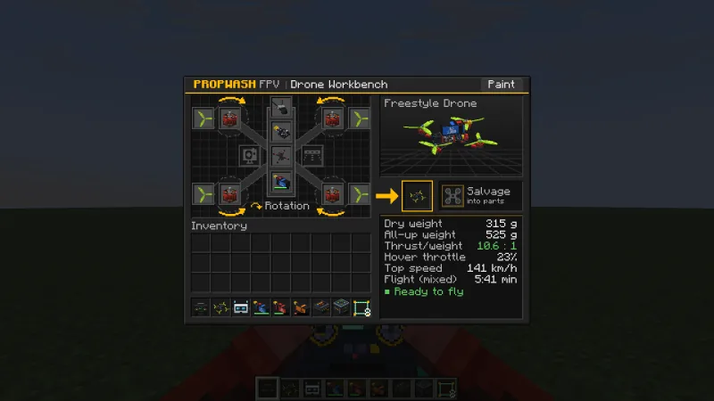
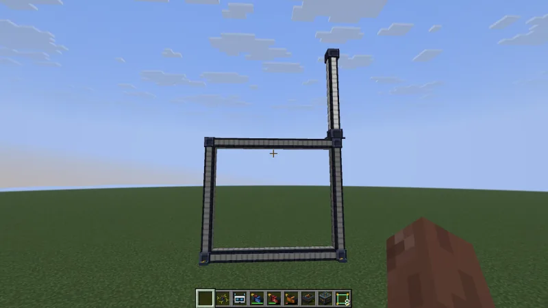
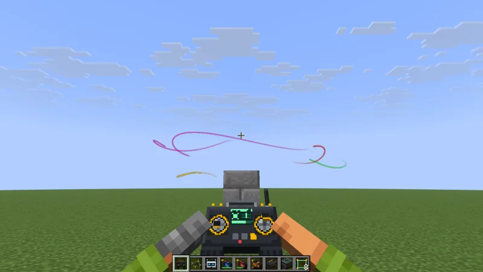
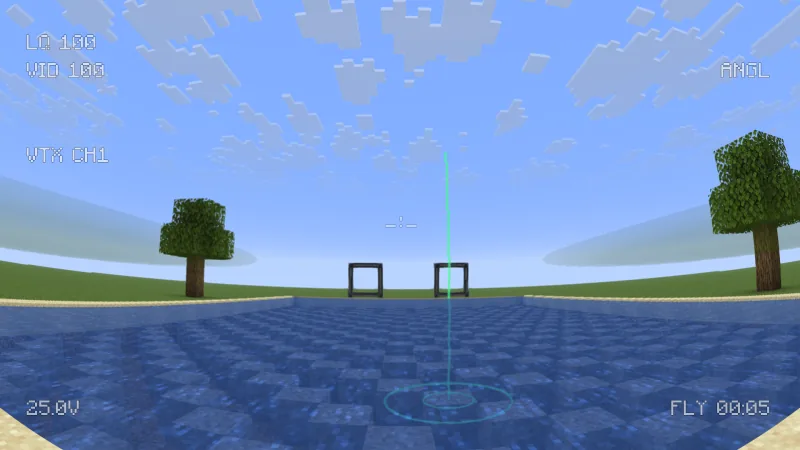
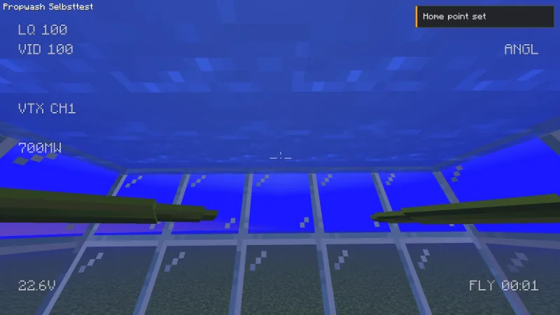
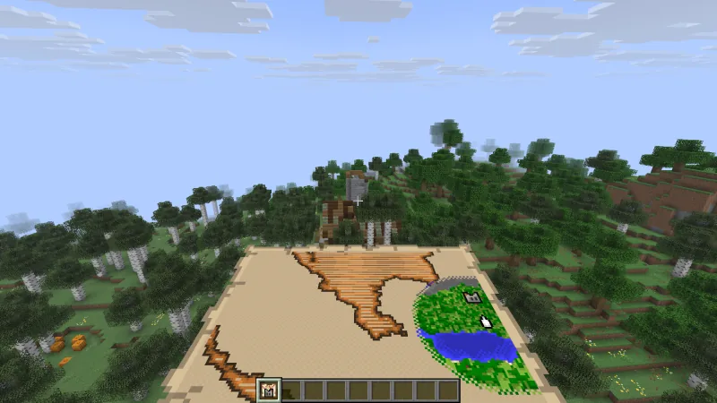
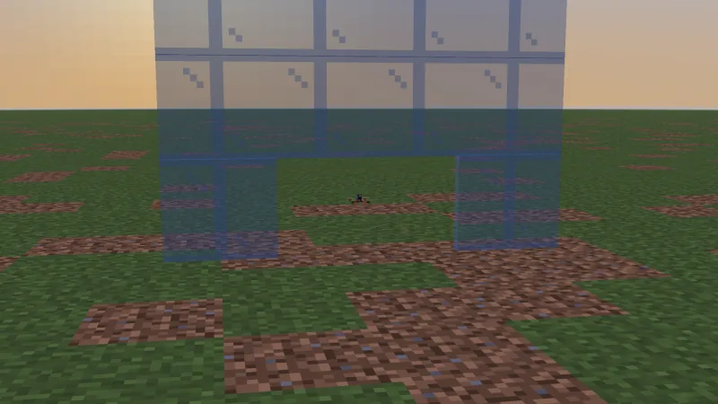
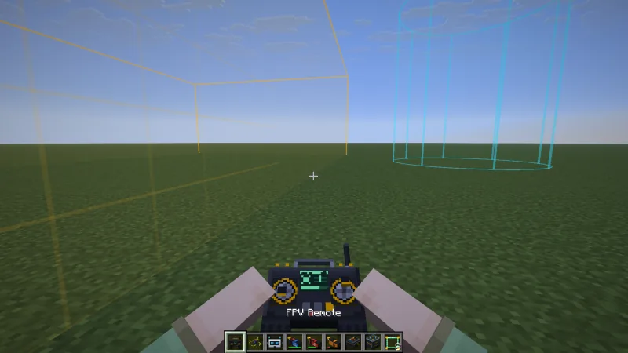

Before you startBevor es losgeht
- Propwash FPV 0.5.2 runs on Minecraft 26.3 with Fabric (with Fabric API) or NeoForge. Download it from CurseForge; the Modrinth page is still in review.Propwash FPV 0.5.2 läuft auf Minecraft 26.3 mit Fabric (mit Fabric API) oder NeoForge. Herunterladen auf CurseForge; die Modrinth-Seite wird noch geprüft.
- On a server, Propwash goes on the server and on every client. Add-ons such as Just More Parts also go on both sides.Auf einem Server gehört Propwash auf den Server und auf jeden Client. Add-ons wie Just More Parts ebenfalls auf beide Seiten.
- In creative mode the Propwash FPV tab has five ready-to-fly drones (Whoop, Cinewhoop, Freestyle, Racer, Long Range) and every part. In survival you craft the parts or find them in chests.Im Kreativmodus hat der Tab Propwash FPV fünf flugfertige Drohnen (Whoop, Cinewhoop, Freestyle, Racer, Long Range) und alle Teile. Im Überlebensmodus stellst du die Teile her oder findest sie in Truhen.
- A real RC radio is the best way to fly, but a gamepad or the keyboard work too.Am besten fliegt es sich mit einer echten Funke, ein Gamepad oder die Tastatur gehen aber auch.
First flightErster Flug
- Build a drone. Place a Drone Workbench and right-click it. Frame in the middle, flight controller stack above it, four motors, four propellers, the video unit at the nose and a battery that fits the frame. The panel on the right shows weight, thrust-to-weight, hover throttle, top speed, flight time and any problems. Take the finished drone out on the right.Drohne bauen. Eine Drohnen-Werkbank aufstellen und rechtsklicken. Rahmen in die Mitte, Flight-Controller-Stack darüber, vier Motoren, vier Propeller, das Videomodul an die Nase und ein Akku, der zum Rahmen passt. Rechts stehen Gewicht, Schub-Gewicht-Verhältnis, Schwebegas, Höchstgeschwindigkeit, Flugzeit und Probleme. Die fertige Drohne rechts herausnehmen.
- Place it. Right-click a block with the drone.Hinstellen. Mit der Drohne einen Block rechtsklicken.
- Bind the radio. Hold the FPV Remote and right-click the drone. Like an ExpressLRS receiver, the drone remembers you: after the workbench, picking it up, item frames and restarts your remote connects right away (binding).Funke binden. Die FPV-Funke halten und die Drohne rechtsklicken. Wie ein ExpressLRS-Empfänger merkt sich die Drohne dich: Nach Werkbank, Aufheben, Item-Rahmen und Neustart verbindet deine Funke sofort (Bindung).
- Put on matching goggles (head slot, or right-click into the air with them). Goggles are not bound – they only have to receive the drone’s video system: analog goggles for analog video, digital goggles for digital video, creative goggles for both. Not sure? Right-click the drone with the goggles in your hand and it tells you whether they fit.Passende Brille aufsetzen (Kopf-Slot, oder damit in die Luft rechtsklicken). Brillen werden nicht gebunden – sie müssen nur das Videosystem der Drohne empfangen: analoge Brille für analoges Video, digitale für digitales, die Kreativ-Brille für beides. Unsicher? Rechtsklick mit der Brille in der Hand auf die Drohne sagt dir, ob sie passt.
- Take off. Hold the bound radio and right-click into the air. The radio checks what you wear: with matching goggles on your head you fly FPV through the drone’s camera; without goggles you fly line of sight, with your view turning towards the drone and a small radio display for battery, signal and flight mode. With goggles that cannot receive the drone’s video the radio refuses and names both systems.Abheben. Die gebundene Funke halten und in die Luft rechtsklicken. Die Funke prüft, was du trägst: Mit passender Brille auf dem Kopf fliegst du FPV durch die Kamera der Drohne; ohne Brille fliegst du auf Sicht: Dein Blick folgt der Drohne, eine kleine Funkanzeige zeigt Akku, Signal und Flugmodus. Mit einer Brille, die das Video der Drohne nicht empfängt, lehnt die Funke ab und nennt beide Systeme.
- Arm and fly. Arm with the arm switch or Z. Arming only works with the drone level and the throttle down. While you fly, walking is locked and you keep holding the radio. Your body stays a normal player: it falls, can be hit, burns, drowns and can die. A red edge and a short notice in FPV warn you; if you die, the drone goes into its failsafe (return home or descend).Scharfschalten und fliegen. Mit dem Arm-Schalter oder Z scharfschalten. Das geht nur, wenn die Drohne gerade steht und das Gas unten ist. Während des Flugs kannst du nicht laufen und hältst die Funke weiter in der Hand. Dein Körper bleibt ein normaler Spieler: Er fällt, kann getroffen werden, brennt, ertrinkt und kann sterben. Ein roter Bildrand und ein kurzer Hinweis im FPV warnen dich; stirbst du, geht die Drohne in ihr Failsafe (Heimflug oder Absinken).
- Stop. Land, disarm, then right-click with the radio again or press Y. The drone stays bound.Aufhören. Landen, entschärfen, dann mit der Funke erneut rechtsklicken oder Y drücken. Die Drohne bleibt gebunden.

With an empty hand, right-clicking a drone picks it up; battery, tune and binding stay with it. Sneak + right-click opens the service menu for the battery, props and camera angle. Two damaged props of the same kind become one in the crafting grid or a grindstone, with both conditions added up plus 5 %. Hold M over any Propwash item in your inventory for its Flight School lesson and Shift for a detailed tooltip. Race frames carry the battery under the frame like real race quads (lower center of gravity, the drone lands on the pack); freestyle and long-range frames carry it on top.
Mit leerer Hand hebt ein Rechtsklick die Drohne auf; Akku, Tuning und Bindung bleiben dran. Schleichen + Rechtsklick öffnet das Wartungsmenü für Akku, Props und Kamerawinkel. Zwei beschädigte Props derselben Sorte ergeben zusammen gecraftet oder im Schleifstein einen Prop mit beiden Zuständen zusammen plus 5 %. M über einem Propwash-Item im Inventar halten öffnet seine Flugschul-Lektion, Shift zeigt einen ausführlichen Tooltip. Race-Rahmen tragen den Akku wie echte Racer unter dem Rahmen (tieferer Schwerpunkt, die Drohne landet auf dem Pack); Freestyle- und Long-Range-Rahmen tragen ihn oben.
Radio, gamepad, keyboardFunke, Gamepad, Tastatur
EdgeTX and OpenTX radiosEdgeTX- und OpenTX-Funken
Connect the radio by USB and choose USB Joystick (HID) on the radio. Propwash detects it on its own and starts with channel order AETR, AUX1 = arm, AUX2 = flight mode (low Acro, middle Horizon, high Angle), AUX3 = beeper, AUX4 = rescue and full-travel throttle.
Die Funke per USB anschließen und an der Funke USB Joystick (HID) wählen. Propwash erkennt sie selbst und startet mit der Kanalreihenfolge AETR, AUX1 = Scharfschalten, AUX2 = Flugmodus (unten Acro, Mitte Horizon, oben Angle), AUX3 = Piepser, AUX4 = Rescue und Gas über den vollen Weg.
Setting up a new deviceEin neues Gerät einrichten
The first time a radio or gamepad shows up, Propwash asks whether to set it up now (never mid-flight): Set up, Later or Never for this device. The receiver wizard (configurator K → Receiver → Receiver wizard…) then walks you through four steps:
Taucht eine Funke oder ein Gamepad zum ersten Mal auf, fragt Propwash, ob es jetzt eingerichtet werden soll (nie mitten im Flug): Einrichten, Später oder Nie für dieses Gerät. Der Empfänger-Assistent (Konfigurator K → Empfänger → Empfänger-Assistent…) führt dann durch vier Schritte:
- Device: pick the radio, a gamepad or the keyboard.Gerät: Funke, Gamepad oder Tastatur wählen.
- Channels: move each stick when asked. For the throttle: push it fully up first, then pull it fully down and hold it there; where it rested before does not matter. If the direction contradicts where the throttle started or your current setting, the wizard asks where the throttle is now. A check page shows every channel live; Inv. flips one that moves the wrong way.Kanäle: jeden Knüppel bewegen, wenn danach gefragt wird. Beim Gas: zuerst ganz nach oben schieben, dann ganz nach unten ziehen und dort halten; wo es vorher stand, spielt keine Rolle. Passt die Richtung nicht zur Startlage oder zu deiner Einstellung, fragt der Assistent, wo das Gas gerade steht. Eine Prüfseite zeigt jeden Kanal live; Inv. dreht einen, der falsch herum läuft.
- Calibrate: sticks centred, then every end stop.Kalibrieren: Knüppel in die Mitte, dann alle Endanschläge.
- Switches: click Assign and flip the switch you want for a function.Schalter: Zuweisen klicken und den gewünschten Schalter umlegen.

Once set up, a device reconnects silently with its profile. Switch functions can also be assigned by hand in the Modes tab, to any AUX range (900–2100 µs) or button, inverted, held or as a toggle:
Einmal eingerichtet, verbindet sich ein Gerät später still mit seinem Profil. Schalter-Funktionen lassen sich auch von Hand im Tab Modi belegen, auf jeden AUX-Bereich (900–2100 µs) oder Knopf, invertiert, gehalten oder als Umschalter:
- Arm / disarmScharf schalten
- Angle modeAngle-Modus
- Horizon modeHorizon-Modus
- GPS rescueGPS Rescue
- Flip uprightAufrichten
- Set home pointHomepoint setzen
- Locator beeperSuchpiepser
- Restart raceRennen neu starten
- Action cam recordingAction-Cam-Aufnahme
- LEDs offLEDs aus
- Altitude hold (ALTHOLD)Höhe halten (ALTHOLD)
- Position hold (POSHOLD)Position halten (POSHOLD)
- Drop cargoFracht abwerfen
- 3D mode3D-Modus
- Blackbox
- VTX powerVTX-Leistung
- Turtle modeTurtle-Modus
- Accessory action 1Zubehör-Aktion 1
- Accessory action 2Zubehör-Aktion 2
- Accessory action 3Zubehör-Aktion 3
- Accessory action 4Zubehör-Aktion 4
- Custom command 1Eigener Befehl 1
- Custom command 2Eigener Befehl 2
- Custom command 3Eigener Befehl 3
- Custom command 4Eigener Befehl 4
- Custom command 5Eigener Befehl 5
- Custom command 6Eigener Befehl 6
- Custom command 7Eigener Befehl 7
- Custom command 8Eigener Befehl 8
Custom commandsEigene Befehle
The Modes tab has a second page, Commands, with the functions Custom command 1 to 8: put your own Minecraft commands such as /time set night on a radio switch or button, assigned like any other function. Set up command… (or a double-click) sets the command for switching on and, if you like, one for switching off. The keys Custom command 1–8 in the Keys tab start unbound; with an off command, every press alternates between the two.
Der Tab Modi hat eine zweite Seite, Befehle, mit den Funktionen Eigener Befehl 1 bis 8: Leg eigene Minecraft-Befehle wie /time set night auf einen Schalter oder Taster der Funke, belegt wie jede andere Funktion. Befehl einrichten … (oder ein Doppelklick) legt den Befehl beim Einschalten fest und auf Wunsch einen beim Ausschalten. Die Tasten Eigener Befehl 1–8 im Tab Tasten sind anfangs nicht belegt; mit Ausschalt-Befehl wechselt jeder Druck zwischen beiden.
- Commands run as if you typed them in chat, with your own permissions; the server decides and reports errors in the chat.Befehle laufen, als hättest du sie im Chat getippt, mit deinen eigenen Rechten; der Server entscheidet und meldet Fehler im Chat.
- Only while you fly (FPV or line of sight) and never with a window open. Each switch fires at most once every 0.5 s, so a command can never flood the server.Nur im Flug (FPV oder auf Sicht) und nie bei offenem Fenster. Jeder Schalter löst höchstens alle 0,5 s aus, ein Befehl kann den Server also nie überfluten.
- Up to 256 characters like the chat; the leading
/is optional. They are saved per radio, the keyboard has its own set.Bis zu 256 Zeichen wie im Chat, der/am Anfang ist freiwillig. Gespeichert wird je Funke, die Tastatur hat einen eigenen Satz.
Gamepad, keyboard and mouseGamepad, Tastatur und Maus
- Gamepads are detected with a Mode 2 layout: throttle and yaw on the left stick. The throttle starts in Upper half mode (centred stick = no throttle); Incremental holds the throttle like cruise control.Gamepads werden mit Mode-2-Belegung erkannt: Gas und Gier auf dem linken Stick. Das Gas startet im Modus Obere Hälfte (Stick in der Mitte = kein Gas); Schrittweise hält das Gas wie ein Tempomat.
- Keyboard flight is the fallback without a radio or gamepad and starts in Angle mode. The device list also has Keyboard to fly with the keyboard even when a controller is connected.Tastatur-Flug ist der Rückfall ohne Funke oder Gamepad und startet im Angle-Modus. In der Geräteliste steht auch Tastatur, um trotz angeschlossenem Controller mit der Tastatur zu fliegen.
- Mouse + keyboard (device list in the Receiver tab or the receiver wizard): the mouse steers pitch and roll like aiming in a shooter – in Angle it holds the tilt where you push it, in Acro mouse speed becomes rotation and the drone stays in its attitude when the mouse stops (Automatic picks per flight mode). Throttle with W/S or the mouse wheel, yaw with A/D, the middle mouse button centres the sticks. Sensitivity, DPI, smoothing, dead zone, expo and return to centre are in the Receiver tab, with virtual sticks and a test pad to try it. Pushing the mouse forward tips the nose down like a stick; Invert pitch, right below the input device, reverses that for the mouse and the pitch keys – also when you fly with the keyboard alone.Maus + Tastatur (Geräteliste im Tab Empfänger oder im Empfänger-Assistenten): Die Maus lenkt Nick und Rollen wie das Zielen in einem Shooter – in Angle hält sie die Neigung dort, wohin du sie schiebst, in Acro wird die Mausgeschwindigkeit zur Drehung, und die Drohne bleibt in ihrer Lage, wenn die Maus steht (Automatisch wählt je Flugmodus). Gas mit W/S oder dem Mausrad, Gieren mit A/D, die mittlere Maustaste zentriert die Knüppel. Empfindlichkeit, DPI, Glättung, Totzone, Expo und Rückstellung stehen im Tab Empfänger, mit virtuellen Knüppeln und einer Testfläche zum Ausprobieren. Maus nach vorn senkt die Nase wie ein Knüppel; Nick (Pitch) umkehren direkt unter dem Eingabegerät dreht das für Maus und Nick-Tasten um – auch beim Fliegen nur mit der Tastatur.
- macOS: Propwash finds radios such as the Radiomaster Pocket without Apple’s GameController framework. A pure MFi gamepad that only works through that framework needs Apple GameController under Receiver → Advanced (macOS).macOS: Propwash findet Funken wie die Radiomaster Pocket ohne Apples GameController-Framework. Ein reines MFi-Gamepad, das nur darüber funktioniert, braucht Apples GameController unter Empfänger → Erweitert (macOS).
Binding and gogglesBindung und Brille
Like with ExpressLRS, every drone’s receiver remembers the pilot who bound it last. The binding stays in the drone through the workbench, picking up and placing, item frames, chests and restarts; only a new flight controller (the receiver sits on the stack) starts unbound. There is nothing to set up.
Wie bei ExpressLRS merkt sich der Empfänger jeder Drohne den Piloten, der sie zuletzt gebunden hat. Die Bindung bleibt in der Drohne – über Werkbank, Aufheben und Absetzen, Item-Rahmen, Truhen und Neustarts; nur ein neuer Flugcontroller (der Empfänger sitzt auf dem Stack) beginnt ungebunden. Es gibt nichts einzurichten.
- Connecting: right-click into the air with your remote. If its drone is gone or the remote was never bound, it connects to the nearest drone within 128 blocks that you have bound yourself.Verbinden: Mit der Funke in die Luft rechtsklicken. Fehlt ihre Drohne oder war die Funke nie gebunden, verbindet sie sich mit der nächsten Drohne im Umkreis von 128 Blöcken, die du selbst gebunden hast.
- Friends: to share a drone, your friend clicks it with their own remote – the same move as binding. The drone then belongs to their remote until you click it with yours again.Freunde: Zum Teilen klickt dein Freund die Drohne mit seiner eigenen Funke an – derselbe Handgriff wie beim Binden. Die Drohne gehört dann zu seiner Funke, bis du sie wieder mit deiner anklickst.
- On servers an old remote no longer flies a drone that someone else has bound since, and nobody can bind a drone while another pilot is flying it. Clicking a parked drone with a remote still binds it, like the bind button on a real receiver.Auf Servern fliegt eine alte Funke keine Drohne mehr, die inzwischen jemand anders gebunden hat, und niemand kann eine Drohne binden, während ein anderer Pilot sie fliegt. Eine abgestellte Drohne mit der Funke anklicken bindet sie weiterhin, wie der Bind-Knopf an einem echten Empfänger.
- Reset: the RX field in the service menu (sneak + right-click the drone) shows the binding – green for you, yellow for someone else – and resets it with two clicks; afterwards every remote has to bind again.Zurücksetzen: Das Feld RX im Wartungsmenü (Schleichen + Rechtsklick auf die Drohne) zeigt die Bindung – grün für dich, gelb für jemand anderen – und setzt sie mit zwei Klicks zurück; danach muss jede Funke neu binden.
- Drones from Propwash 0.4.0 behave as before until you bind them once; goggles bound in 0.4.0 simply work with every matching drone.Drohnen aus Propwash 0.4.0 verhalten sich wie bisher, bis du sie einmal bindest; in 0.4.0 gebundene Brillen funktionieren einfach mit jeder passenden Drohne.
The video system checkDie Prüfung des Videosystems
Goggles are never bound. Whenever you bind, take off or search for your drone, the radio checks the goggles on your head against the drone’s video system – and it keeps checking while you fly:
Brillen werden nie gebunden. Beim Binden, Abheben und bei der Suche nach deiner Drohne prüft die Funke die Brille auf deinem Kopf gegen das Videosystem der Drohne – und sie prüft im Flug weiter:
| On your headAuf dem Kopf | Binding and take-offBinden und Abheben | In flightIm Flug |
|---|---|---|
| Matching gogglesPassende Brille | You fly FPV; the message after binding ends with “goggles match: FPV”.Du fliegst FPV; die Meldung nach dem Binden endet mit „Brille passt: FPV“. | Putting them on switches to FPV at once.Aufsetzen schaltet sofort auf FPV. |
| No gogglesKeine Brille | You fly line of sight (“no goggles: line of sight”).Du fliegst auf Sicht („ohne Brille: Sichtflug“). | Taking them off switches to line of sight; the drone keeps flying.Absetzen schaltet auf Sichtflug; die Drohne fliegt weiter. |
| Goggles for another video systemBrille für ein anderes Videosystem | Binding, take-off and the search are refused; the message names what your goggles receive and what the drone sends. The remote keeps its drone.Binden, Abheben und die Suche werden abgelehnt; die Meldung nennt, was deine Brille empfängt und was die Drohne sendet. Die Funke behält ihre Drohne. | No picture: analog goggles show noise, digital goggles go black, with NO SIGNAL and both systems. The drone stays controllable – take the goggles off to see it.Kein Bild: Die analoge Brille rauscht, die digitale wird schwarz, dazu KEIN SIGNAL und beide Systeme. Die Drohne bleibt steuerbar – setz die Brille ab, um sie zu sehen. |

The Video tab of the configurator shows exactly the settings of the goggles you are wearing, under the heading Your goggles: …. Without goggles it shows a short note instead – and searching for a video setting finds nothing until you put goggles on. The free settings of the creative goggles (own field of view, latency, range, noise, obstacles) only ever apply while you wear creative goggles.
Der Tab Video des Konfigurators zeigt genau die Einstellungen der Brille, die du trägst, unter der Überschrift Deine Brille: …. Ohne Brille steht dort nur ein kurzer Hinweis – und die Suche findet eine Video-Einstellung erst, wenn du eine Brille aufhast. Die freien Einstellungen der Kreativ-Brille (eigenes Sichtfeld, Latenz, Reichweite, Rauschen, Hindernisse) gelten immer nur, solange du eine Kreativ-Brille trägst.
KeysTasten
Every function has its own key. Change them in the configurator’s Keys tab or under Options → Controls → Key Binds → Propwash FPV. The defaults are key positions on a US layout; the game shows them with your keyboard’s labels (on a German keyboard the arm key shows as Y and the stop key as Z).
Jede Funktion hat ihre eigene Taste. Ändern im Konfigurator-Tab Tasten oder unter Optionen → Steuerung → Tastenbelegung → Propwash FPV. Die Standards sind Tastenpositionen auf einer US-Tastatur; das Spiel zeigt sie mit den Beschriftungen deiner Tastatur (auf einer deutschen Tastatur heißt die Arm-Taste Y und die Stopp-Taste Z).
Search the configurator with Ctrl+F (Cmd+F on a Mac) or the search box at the top right: type in English or German, pick a suggestion and the configurator opens the tab, scrolls to the setting, world rule or key binding and highlights it.
Suche im Konfigurator mit Strg+F (auf dem Mac Cmd+F) oder dem Suchfeld oben rechts: auf Deutsch oder Englisch tippen, einen Vorschlag wählen, und der Konfigurator öffnet den Tab, scrollt zur Einstellung, Welt-Regel oder Taste und hebt sie hervor.
Keyboard flightTastatur-Flug
| ActionAktion | Default keyStandardtaste |
|---|---|
| Keyboard flight: throttle upTastaturflug: Gas geben | until bound:bis belegt: W |
| Keyboard flight: throttle downTastaturflug: Gas wegnehmen | until bound:bis belegt: S |
| Keyboard flight: yaw leftTastaturflug: Gieren links | until bound:bis belegt: A |
| Keyboard flight: yaw rightTastaturflug: Gieren rechts | until bound:bis belegt: D |
| Keyboard flight: nose down (forward)Tastaturflug: Nase runter (vorwärts) | ↑ |
| Keyboard flight: nose up (back)Tastaturflug: Nase hoch (rückwärts) | ↓ |
| Keyboard flight: roll leftTastaturflug: Rollen links | ← |
| Keyboard flight: roll rightTastaturflug: Rollen rechts | → |
DroneDrohne
| ActionAktion | Default keyStandardtaste |
|---|---|
| Arm / disarmScharf schalten / entschärfen | Z |
| Cycle flight mode (Acro/Angle/Horizon) (shared on purpose)Flugmodus wechseln (bewusst geteilt) | R |
| Flight mode: AcroFlugmodus: Acro | Numpad 1 |
| Flight mode: AngleFlugmodus: Angle | Numpad 2 |
| Flight mode: HorizonFlugmodus: Horizon | Numpad 3 |
| Altitude hold (ALTHOLD)Höhe halten (ALTHOLD) | Numpad 4 |
| Position hold (POSHOLD)Position halten (POSHOLD) | Numpad 5 |
| 3D mode on/off3D-Modus an/aus | Numpad 6 |
| Flip uprightAufrichten | U |
| Turtle mode on/offTurtle-Modus an/aus | Numpad 8 |
| Stop FPV flightFPV-Flug beenden | Y |
| Locator beeperSuchpiepser | . |
| LEDs on/offLEDs an/aus | F8 |
| Open receiver wizardEmpfänger-Assistent öffnen | not boundnicht belegt |
| GPS rescueGPS Rescue | J |
| Set home pointHomepoint setzen | , |
| Cargo drop (open gripper)Greifer öffnen (Fracht abwerfen) | Enter |
| Toggle drone trailsDrohnen-Trails ein/aus | not boundnicht belegt |
The locator beeper helps you find a crashed drone: switch it on with its key or switch and it keeps beeping after you leave the drone, until you switch it off again (also on foot), pick the drone up, take the battery out or the battery runs flat. Everyone nearby hears it.
Der Suchpiepser hilft, eine abgestürzte Drohne zu finden: Schalte ihn per Taste oder Schalter an, und er piept weiter, wenn du die Drohne verlässt – bis du ihn wieder ausschaltest (auch zu Fuß), die Drohne aufhebst, den Akku herausnimmst oder der Akku leer ist. Alle in der Nähe hören ihn.
Everything elseAlles andere
| ActionAktion | Default keyStandardtaste |
|---|---|
| Restart raceRennen neu starten | Backspace |
| Open configuratorKonfigurator öffnen | K |
| Flight school (hold over item)Flugschule (über Item halten) | M |
| Action cam recordingAction-Cam-Aufnahme | F9 |
| Spectate: next video channelZuschauen: nächster Videokanal | F7 |
| Rotate gate (sneak: change mount) (shared on purpose)Gate drehen (Schleichen: Lage) (bewusst geteilt) | R |
| Adjust gate: use the mouse (hold)Gate einstellen: Maus benutzen (halten) | Left Alt |
| Blackbox pause / resumeBlackbox pausieren / fortsetzen | Numpad 7 |
| Step VTX powerVTX-Leistung umschalten | F10 |
| Accessory action 1Zubehör-Aktion 1 | Numpad 9 |
| Accessory action 2Zubehör-Aktion 2 | Numpad 0 |
| Accessory action 3Zubehör-Aktion 3 | Numpad Enter |
| Accessory action 4Zubehör-Aktion 4 | Numpad + |
Right-clicking with the radio also ends a flight. The rotate-gate key shares R with the flight mode on purpose: one works only with a gate in hand, the other only while flying.
Rechtsklick mit der Funke beendet ebenfalls einen Flug. Die Taste „Gate drehen“ teilt sich R absichtlich mit dem Flugmodus: Die eine wirkt nur mit einem Gate in der Hand, die andere nur im Flug.
Flight modes and tuningFlugmodi und Tuning
- Acro (rate mode) holds the angle you leave it at, like a real freestyle or racing quad. Angle levels itself and limits the tilt. Horizon levels near the centre and flips at full stick.Acro (Rate-Modus) hält den Winkel, in dem du sie lässt, wie ein echter Freestyle- oder Race-Quad. Angle richtet sich selbst gerade und begrenzt die Neigung. Horizon richtet sich in der Mitte gerade und flippt bei vollem Ausschlag.
- ALTHOLD and POSHOLD hold height and position on simulated barometer, GPS and compass, so they never hold perfectly. Without a GPS fix POSHOLD only holds the height.ALTHOLD und POSHOLD halten Höhe und Position mit simuliertem Barometer, GPS und Kompass, also nie perfekt. Ohne GPS-Fix hält POSHOLD nur die Höhe.
- 3D mode works like reversible ESCs with Betaflight 3D: unlock it once in the Modes tab (row 3D mode, switch Unlock), then put it on a radio switch or a key (default Numpad 6). The throttle center becomes zero thrust (deadband ±50 µs), above it the props push up, below it the motors spin backwards and push down – fly upside down with the throttle a little below center, punch down faster than free fall and take off upside down after a crash (arming needs the throttle centered, and works upside down). Normal props give only about half the thrust in reverse. 3D combines with Acro, Horizon and Angle (Angle always levels upright); GPS Rescue, failsafe and ALTHOLD/POSHOLD fly without it. Flip it off for normal throttle again. Calibrate the throttle center in the receiver wizard; the world rule
propwash:allow_3d_modelets servers forbid it.Der 3D-Modus arbeitet wie umkehrbare ESCs mit Betaflight-3D: einmal im Tab Modi freischalten (Zeile 3D-Modus, Schalter Freigabe), dann auf einen Funkenschalter oder eine Taste legen (Standard Ziffernblock 6). Die Gasmitte ist Nullschub (Totzone ±50 µs), darüber drücken die Props nach oben, darunter drehen die Motoren rückwärts und drücken nach unten – kopfüber schweben mit Gas etwas unter der Mitte, schneller als im freien Fall nach unten stechen und nach einem Absturz kopfüber starten (scharf schalten nur mit Gas in der Mitte, auch kopfüber). Normale Props liefern rückwärts nur etwa halb so viel Schub. 3D geht mit Acro, Horizon und Angle (Angle richtet immer aufrecht aus); GPS-Rettung, Failsafe und ALTHOLD/POSHOLD fliegen ohne 3D. Abschalten bringt sofort normales Gas zurück. Die Gasmitte kalibrierst du im Empfänger-Assistenten; mit der Welt-Regelpropwash:allow_3d_modekönnen Server 3D verbieten. - Max arm angle (Configuration tab, section Arming) works like
small_anglein Betaflight: how far the drone may be tilted when you arm it, 0–180°, default 25°. At 180° it arms in any attitude, even in the air and upside down (the throttle still has to be down). The value belongs to the drone’s tune and travels with share codes.Max. Scharf-Winkel (Tab Konfiguration, Abschnitt Scharf schalten) wirkt wiesmall_anglein Betaflight: wie schräg die Drohne beim Scharfschalten höchstens stehen darf, 0–180°, Standard 25°. Bei 180° geht es in jeder Lage, auch in der Luft und kopfüber (das Gas muss weiter unten sein). Der Wert gehört zum Tuning der Drohne und reist mit Sharecodes mit. - GPS rescue keeps going without you: if the return to home is running when you stop flying, put the radio away, leave the game or fly out of range, the drone flies home on its own and lands at the home point. Use the radio again to land it right where it is. Servers can turn this off with the world rule GPS rescue without pilot.GPS Rescue fliegt auch ohne dich weiter: Läuft der Heimflug, wenn du aufhörst zu fliegen, die Funke wegsteckst, das Spiel verlässt oder außer Reichweite fliegst, fliegt die Drohne allein heim und landet am Homepoint. Mit der Funke landest du sie sofort an Ort und Stelle. Server können das mit der Welt-Regel GPS Rescue ohne Pilot abschalten.
- Rates, PID, filters and the throttle curve are set in the configurator tabs Rates and PID Tuning and saved to the drone you fly or hold. The online configurator uses the same defaults.Rates, PID, Filter und Gaskurve stellst du in den Konfigurator-Tabs Rates und PID-Tuning ein; sie werden auf der Drohne gespeichert, die du fliegst oder hältst. Der Online-Konfigurator nutzt dieselben Standards.
- Every number field takes typed values: click it and type with the number row or the numpad, dot or comma. Enter applies, Esc brings the old value back, ↑/↓ step; a value out of range turns orange and is set to the limit.Jedes Zahlenfeld nimmt getippte Werte: anklicken und mit der Ziffernreihe oder dem Ziffernblock tippen, Punkt oder Komma. Enter übernimmt, Esc holt den alten Wert zurück, ↑/↓ gehen schrittweise; ein Wert außerhalb des Bereichs wird orange und auf die Grenze gesetzt.
- Your own presets: at the end of the Rates and PID Tuning tabs, Keep saves your values under a name next to the built-in presets; load, rename or delete them there. They work on every drone (rates as the feel of your sticks, PID tuning only where it differs from the drone’s defaults) and travel as a short code (
PWT1-…).Eigene Presets: Am Ende der Tabs Rates und PID-Tuning speichert Merken deine Werte unter einem Namen neben den eingebauten Presets; dort lädst, benennst oder löschst du sie. Sie gelten für jede Drohne (Rates als Gefühl deiner Knüppel, PID-Tuning nur, wo es vom Standard der Drohne abweicht) und lassen sich als kurzer Code teilen (PWT1-…). - Blackbox: switched on in the Blackbox tab, every armed flight is saved as a Betaflight blackbox log – open it in Blackbox Explorer or PIDtoolbox to see what your PIDs and filters do (Tuning with the blackbox).Blackbox: Im Tab Blackbox eingeschaltet, wird jeder scharfe Flug als Betaflight-Blackbox-Log gespeichert – in Blackbox Explorer oder PIDtoolbox siehst du, was deine PIDs und Filter tun (Tuning mit der Blackbox).
- Turtle mode flips a drone that landed upside down back over with its own props, like Betaflight’s flip over after crash: put Turtle mode on a radio switch or a key in the Modes tab (default Numpad 8), arm while the drone lies on its back and push roll, pitch or yaw toward the side it should tip to. It only arms on the ground, ignores the arm angle and stops the motors once the drone is upright; the OSD shows
TURTLE.Turtle-Modus dreht eine Drohne, die auf dem Kopf gelandet ist, mit den eigenen Props wieder um, wie Flip over after crash in Betaflight: Turtle-Modus im Tab Modi auf einen Funkenschalter oder eine Taste legen (Standard Numpad 8), scharf schalten, solange die Drohne auf dem Rücken liegt, und Roll, Nick oder Gier zu der Seite drücken, über die sie kippen soll. Er schaltet nur am Boden scharf, ignoriert den Scharf-Winkel und hält die Motoren an, sobald die Drohne wieder steht; das OSD zeigtTURTLE. - Disarm on crash (world rule Disarm on crash) stops the motors after a hard crash. It lives in the World rules tab; the configurator search (disarm on crash, crash disarm) takes you there.Nach Absturz abschalten (Welt-Regel Nach Absturz abschalten) hält die Motoren nach einem harten Absturz an. Sie steht im Tab Welt-Regeln; die Suche im Konfigurator (Nach Absturz abschalten, Absturz) bringt dich hin.
- Battery: packs discharge like real ones – nearly flat for most of the flight, then a steep drop in the last ~10 %. The OSD voltage is smoothed like in Betaflight and flashes yellow below the warning and red below the cutoff voltage; when it flashes on every punch, land and swap the pack.Akku: Packs entladen sich wie echte – fast flach über den größten Teil des Flugs, in den letzten rund 10 % fällt die Spannung steil ab. Die OSD-Spannung ist geglättet wie bei Betaflight und blinkt gelb unter der Warn- und rot unter der Abschaltspannung; blinkt sie bei jedem Gasstoß, lande und tausche den Akku.
Gates and coursesGates und Kurse
Gates and course elements are placed like blocks and joined into a course with the Course Tool: click them in order, the first gate is start and finish. Laps, splits, ghosts, the race line and leaderboards work the same for every gate and element.
Gates und Kurs-Elemente stellst du wie Blöcke auf und verbindest sie mit dem Kurs-Werkzeug zu einem Kurs: der Reihe nach anklicken, das erste Gate ist Start und Ziel. Runden, Splits, Geister, Ideallinie und Bestenlisten funktionieren für jedes Gate und Element gleich.
Turning gates freelyGates frei drehen
- Sneak + right-click a gate while holding a gate or the Course Tool starts Adjust gate right in the game: you keep walking and looking around while a slim panel on the right shows yaw, pitch and roll in degrees for diagonal, tilted and diamond gates and the opening from 1 × 1 to 16 × 16 blocks in half steps.Schleichen + Rechtsklick mit einem Gate oder dem Kurs-Werkzeug auf ein Gate startet Gate einstellen direkt im Spiel: Du läufst und schaust dich weiter um, ein schmales Panel rechts zeigt Gieren, Nicken und Rollen in Grad für diagonale, geneigte und Rauten-Gates und die Öffnung von 1 × 1 bis 16 × 16 Blöcken in halben Schritten.
- The mouse wheel changes the selected row (5° steps, Ctrl for 1°), sneak + mouse wheel picks the row. The gate already stands in its new pose; red means something is in the way. Enter or right-click applies, Esc cancels.Das Mausrad ändert die gewählte Zeile (5°-Schritte, mit Strg 1°), Schleichen + Mausrad wählt die Zeile. Das Gate steht schon in der neuen Stellung; rot heißt, etwas ist im Weg. Enter oder Rechtsklick übernimmt, Esc bricht ab.
- Hold Alt to free the mouse for the panel: drag the sliders, Reset, and Leave course takes the gate out of its course. F1 hides the panel for a clear view.Alt halten gibt die Maus fürs Panel frei: Regler ziehen, Zurücksetzen, und Aus dem Kurs nimmt das Gate aus seinem Kurs. F1 blendet das Panel für den freien Blick aus.
- R (Rotate gate) turns standing and hanging gates in 90°, 45°, 15° or 5° steps; choose the step in the Race tab.R (Gate drehen) dreht stehende und hängende Gates in Schritten von 90°, 45°, 15° oder 5°; den Schritt wählst du im Tab Rennen.
- Drones bounce off angled gates at the real angle: grazing a tilted gate deflects the drone, hitting it head-on is a crash like hitting a wall.Drohnen prallen an schrägen Gates im echten Winkel ab: Streifen lenkt die Drohne ab, frontal ist es ein Crash wie an einer Wand.
Flags, slalom poles and dive cubesFlaggen, Slalomstangen und Tauchwürfel
- Slalom Pole: pass it on the side its ground arrows show; the red cross marks the wrong side. When the Course Tool adds a pole right after a pole, it gets the other side, so a row of poles becomes a slalom.Slalomstange: auf der Seite vorbeifliegen, die ihre Bodenpfeile zeigen; das rote Kreuz markiert die falsche Seite. Hängt das Kurs-Werkzeug eine Stange direkt an eine Stange, bekommt sie die andere Seite – eine Reihe Stangen wird so zum Slalom.
- Race Flag: a turn flag – fly past it, around behind it and back on the other side, left or right around as its arrow arc shows.Rennflagge: eine Wendeflagge – vorbeifliegen, dahinter herum und auf der anderen Seite zurück, links oder rechts herum, wie ihr Pfeilbogen zeigt.
- Dive Cube: dive in through the top and out through the side that lights up.Tauchwürfel: von oben hineintauchen und durch die leuchtende Seite hinaus.
Right-click the ground to place them, with a preview. R turns them, sneak + R switches the side, direction or exit, and sneak + right-click adjusts them in the game like a gate: direction, height and scoring width (how far beside a pole or flag a pass still counts) or the opening of the cube from 1 to 16 blocks. A course still starts with a gate. A wrong side, direction or exit shows red in the HUD and the element stays your next target; the server checks every stage.
Rechtsklick auf den Boden stellt sie auf, mit Vorschau. R dreht sie, Schleichen + R wechselt Seite, Richtung oder Ausgang, und Schleichen + Rechtsklick stellt sie wie ein Gate im Spiel ein: Richtung, Höhe und Wertungsbreite (wie weit neben Stange oder Flagge ein Vorbeiflug noch zählt) bzw. die Öffnung des Würfels von 1 bis 16 Blöcken. Ein Kurs beginnt weiter mit einem Gate. Falsche Seite, Richtung oder falscher Ausgang erscheinen rot im HUD, das Element bleibt dein nächstes Ziel; der Server prüft jede Stufe.
Freeform gatesFreiform-Gates
A Freeform Gate has no frame: the blocks around an opening are its edge. Hallways, cave mouths, windows and shafts become gates of any shape, outlined by a glowing LED strip.
Ein Freiform-Gate hat keinen Rahmen: Die Blöcke rund um eine Öffnung sind sein Rand. Gänge, Höhleneingänge, Fenster und Schächte werden so zu Gates jeder Form, umrandet von einer leuchtenden LED-Leiste.

- Right-click a block at the edge of the opening – the floor of a hallway, a window sill, a wall. The gate lies across your view; for a shaft, click its inside wall while looking down. The preview shows the outline in white, or in the HUD why it doesn’t fit.Rechtsklick auf einen Block am Rand der Öffnung – den Boden eines Gangs, eine Fensterbank, eine Wand. Das Gate liegt quer zu deinem Blick; bei einem Schacht klickst du mit Blick nach unten auf die Innenwand. Die Vorschau zeigt den Umriss weiß oder im HUD, warum es nicht passt.
- The opening has to be closed all around by blocks that a drone bumps into – leaves, glass panes and bars included, water and lava count as edge too. Blocks touching only at a corner close it. Its size is limited by the world rule Freeform gate: largest opening (20 × 20 by default).Die Öffnung muss ringsum von Blöcken geschlossen sein, an denen eine Drohne abprallt – auch Laub, Glasscheiben und Gitter; Wasser und Lava zählen ebenfalls als Rand. Blöcke, die sich nur an einer Ecke berühren, schließen. Wie groß sie sein darf, legt die Welt-Regel Freiform-Gate: größte Öffnung fest (Standard 20 × 20).
- A lap counts only when you fly through the stored opening in the direction of its arrows; R reverses it. Freeform gates join courses with the Course Tool like gates and may be start and finish.Eine Runde zählt nur, wenn du durch die gespeicherte Öffnung in Richtung ihrer Pfeile fliegst; R kehrt sie um. Freiform-Gates hängt das Kurs-Werkzeug wie Gates an, sie dürfen auch Start und Ziel sein.
- If blocks change later, the gate keeps its stored opening: open spots in the edge glow red and a warning sign appears. Sneak + right-click starts Adjust freeform gate: the mouse wheel reverses the direction, and with Alt held Rescan takes the blocks as they are now.Ändern sich die Blöcke später, behält das Gate seine gespeicherte Öffnung: offene Stellen im Rand leuchten rot, ein Warnzeichen erscheint. Schleichen + Rechtsklick startet Freiform-Gate einstellen: Das Mausrad kehrt die Richtung um, und mit gehaltener Alt-Taste übernimmt Neu abtasten die Blöcke von jetzt.
Gate polesGate-Stangen
A Gate Pole is a single side of a gate – same tube, connectors and LED strips. Poles are obstacles and markers, not course elements: they don’t count in laps, and the Course Tool leaves them out.
Eine Gate-Stange ist eine einzelne Gate-Seite – dasselbe Rohr, dieselben Verbinder und LED-Leisten. Stangen sind Hindernis und Markierung, keine Kurs-Elemente: Sie zählen in keiner Runde, und das Kurs-Werkzeug lässt sie aus.

- Right-click the ground and it stands on a cross foot, right-click a wall and it sticks out sideways, right-click a ceiling and it hangs down.Rechtsklick auf den Boden stellt sie auf einen Kreuzfuß, Rechtsklick auf eine Wand lässt sie waagerecht herausragen, Rechtsklick an die Decke lässt sie herabhängen.
- Right-click a standing gate and the pole sits on its nearest top corner with a three-way connector; right-click a pole and it grows into a tower of up to four.Rechtsklick auf ein stehendes Gate setzt die Stange mit einem 3-Wege-Verbinder auf die nächste obere Ecke; Rechtsklick auf eine Stange verlängert sie zu einem Turm aus bis zu vier.
- Length 1–16 blocks in half steps, LEDs in 16 colors: R turns it, sneak + R changes the color, sneak + right-click opens Gate pole settings, and a dye colors it directly.Länge 1–16 Blöcke in halben Schritten, LEDs in 16 Farben: R dreht sie, Schleichen + R wechselt die Farbe, Schleichen + Rechtsklick öffnet Gate-Stange einstellen, und ein Farbstoff färbt sie direkt.
- A gate with poles on it can only be flipped until you take the poles off; breaking the gate takes its poles with it.Ein Gate mit Stangen darauf lässt sich nur noch umdrehen, bis du die Stangen abnimmst; baust du das Gate ab, kommen seine Stangen mit.
Redstone from gatesRedstone aus Gates
Every gate and freeform gate gives a redstone pulse when a drone flies through it the right way – in free flight and in races. The pulse powers the block the gate is mounted on, like a button pressed on that block.
Jedes Gate und Freiform-Gate gibt einen Redstone-Puls, wenn eine Drohne in der richtigen Richtung hindurchfliegt – im freien Flug und im Rennen. Der Puls versorgt den Block, an dem das Gate befestigt ist, wie ein Knopf an diesem Block.

- Which block: under a standing gate (or under the bottom gate of a stack), the ceiling block of a hanging gate, the wall block behind a wall gate, for a gate lying over a pit or under a hole in the ceiling the edge block under (or above) the middle of its bottom bar, and for a freeform gate the edge block under the middle of the opening. Wire lamps, doors, pistons or a note block to it.Welcher Block: unter einem stehenden Gate (bei einem Stapel unter dem untersten), der Deckenblock eines hängenden Gates, der Wandblock hinter einem Wand-Gate, bei einem liegenden Gate über einer Grube oder unter einem Deckenloch der Randblock unter (bzw. über) der Mitte des unteren Balkens und bei einem Freiform-Gate der Randblock unter der Mitte der Öffnung. Lampen, Türen, Kolben oder einen Notenblock daran anschließen.
- Only valid passes count – the right direction, through the opening, with a piloted drone. A pass during the pulse keeps it going.Es zählen nur gültige Durchflüge – in der richtigen Richtung, durch die Öffnung, mit einer gesteuerten Drohne. Ein Durchflug während des Pulses verlängert ihn.
- On the Redstone page of Adjust gate you switch the signal off, set the pulse from 2 to 100 ticks (default 10 ticks = 0.5 s) or choose Races only. A red outline marks the powered block.Auf der Seite Redstone von Gate einstellen schaltest du das Signal aus, stellst den Puls von 2 bis 100 Ticks ein (Standard 10 Ticks = 0,5 s) oder wählst Nur im Rennen. Ein roter Rahmen markiert den versorgten Block.
Laps per course and editing a courseRunden je Kurs und Kurs bearbeiten
Every course has its own lap count and, if you like, a name. A new course takes Laps (default) from your Race tab with the first Course Tool click; after that the course’s lap count applies to every pilot, in heats and lobbies too, and a finish only counts once that many laps are flown. Courses from Propwash 0.4.0 and found courses have no lap count of their own: they follow each pilot’s default until someone sets one.
Jeder Kurs hat seine eigene Rundenzahl und, wenn du magst, einen Namen. Ein neuer Kurs übernimmt mit dem ersten Klick des Kurs-Werkzeugs Runden (Standard) aus deinem Tab Rennen; danach gilt die Rundenzahl des Kurses für alle Piloten, auch in Läufen und Lobbys, und ein Zieleinlauf zählt erst, wenn so viele Runden geflogen sind. Kurse aus Propwash 0.4.0 und gefundene Kurse haben keine eigene Rundenzahl: Sie folgen dem Standard jedes Piloten, bis jemand eine setzt.

- Open it: right-click into the air with the Course Tool (or Race tab → leaderboard) and press Edit course. The leaderboard shows the course’s name, its laps and your best race over that lap count.Öffnen: Mit dem Kurs-Werkzeug in die Luft rechtsklicken (oder Tab Rennen → Bestenliste) und Kurs bearbeiten drücken. Die Bestenliste zeigt Namen und Runden des Kurses und dein bestes Rennen über diese Rundenzahl.
- Name and laps: a name of up to 32 characters, laps from 1 to 99, or 0 for endless free practice with lap times. Neither changes the rankings.Name und Runden: ein Name mit bis zu 32 Zeichen, 1 bis 99 Runden oder 0 für endloses freies Training mit Rundenzeiten. Beides ändert nichts an der Wertung.
- Order: the arrows move a gate or element earlier or later, Start moves start and finish to another gate without changing the order, and × takes a gate out of the course – it stays in the world.Reihenfolge: Die Pfeile schieben ein Gate oder Element nach vorn oder hinten, Start legt Start und Ziel auf ein anderes Gate, ohne die Reihenfolge zu ändern, und × nimmt ein Gate aus dem Kurs – es bleibt in der Welt stehen.
- Add gates points your Course Tool at the course: every gate you click afterwards is added to its end. Delete course (click twice) removes the course with its leaderboard and ghosts; the gates stay.Gates anhängen stellt dein Kurs-Werkzeug auf den Kurs: Jedes Gate, das du danach anklickst, kommt ans Ende. Kurs löschen (zweimal klicken) entfernt den Kurs samt Bestenliste und Geistern; die Gates bleiben stehen.
- A changed layout starts a new leaderboard. Changing the order, the start or the gates archives the times and ghosts of the old layout, so times of different tracks never mix;
/propwash race archive <course>shows the last five layouts.Ein geändertes Layout beginnt eine neue Bestenliste. Reihenfolge, Start oder Gates ändern archiviert Zeiten und Geister des alten Layouts, damit sich Zeiten verschiedener Strecken nie mischen;/propwash race archive <Kurs>zeigt die letzten fünf Layouts. - Who may edit: the course’s creator and operators; a course without a creator can be changed by anyone standing within 256 blocks of one of its gates. Nobody edits in adventure or spectator mode, and found courses are only deleted by an operator. Everyone else sees the window as View course with the reason.Wer bearbeiten darf: der Ersteller des Kurses und Operatoren; einen Kurs ohne Ersteller ändert jeder, der höchstens 256 Blöcke von einem seiner Gates entfernt steht. Im Abenteuer- und Zuschauermodus bearbeitet niemand, und gefundene Kurse löscht nur ein Operator. Alle anderen sehen das Fenster als Kurs ansehen mit dem Grund.
- Commands:
/propwash race laps <laps> <course>sets the laps of a course and/propwash race name <course> [name]its name.Befehle:/propwash race laps <Runden> <Kurs>setzt die Runden eines Kurses und/propwash race name <Kurs> [Name]seinen Namen.
When a lap countsWann eine Runde zählt
Leaderboards only take laps flown without flight aids. If something counts as an aid, the race says why – when the lap starts, as soon as it happens during the lap, and at the lap: altitude or position hold, GPS rescue, world rules that change the physics (named one by one), a creative drone, a drone whose parts only fit with Parts must fit off, or creative goggles with less latency than the drone’s video transmitter.
Bestenlisten nehmen nur Runden ohne Flughilfe. Zählt etwas als Flughilfe, sagt das Rennen warum – beim Start der Runde, sobald es während der Runde dazukommt, und bei der Runde: Höhe oder Position halten, GPS-Rettung, Welt-Regeln, die die Physik ändern (einzeln mit Namen), eine Kreativ-Drohne, eine Drohne, deren Teile nur mit ausgeschaltetem Teile müssen zusammenpassen passen, oder eine Kreativ-Brille mit weniger Latenz als der Videosender der Drohne.
- Creative goggles count: unlimited range, obstacles off, a clean picture, receiving every video system and your own field of view are no flight aid.Die Kreativ-Brille zählt: unendliche Reichweite, Hindernisse aus, ein sauberes Bild, jedes Videosystem empfangen und ein eigenes Sichtfeld sind keine Flughilfe.
- Latency: Latency from in the Video tab of the creative goggles is Video unit by default – the goggles show the picture as late as the drone’s transmitter (analog 12 ms, digital 26–30 ms). With Custom value anything down to 0 ms is possible, but a lap with less latency than the transmitter doesn’t count.Latenz: Latenz aus im Tab Video der Kreativ-Brille steht standardmäßig auf Videomodul – die Brille zeigt das Bild so verzögert wie der Sender der Drohne (analog 12 ms, digital 26–30 ms). Mit eigenem Wert geht alles bis 0 ms, aber eine Runde mit weniger Latenz als der Sender zählt nicht.
- Laps flown over signal repeaters count normally.Runden über Signal-Repeater zählen ganz normal.
- Assisted laps: with the world rule Save assisted laps (on in Training and Arcade) laps and races with a flight aid are saved anyway – in their own Assisted section below the leaderboard with the reason on hover, with their own violet ghost and ASSISTED while racing, but never as a record. The Flight aid check: why is my lap assisted? section in the configurator’s Race tab shows before you fly everything that would make your lap count as assisted right now – world rules and zones with value and default, your drone (creative flight controller, parts that only fit with Parts must fit off), creative goggles faster than the transmitter, altitude or position hold, GPS Rescue and add-on flight aids – each with a green or yellow dot; while flying it shows the real state.Runden mit Flughilfe: Mit der Welt-Regel Runden mit Flughilfe speichern (in Training und Arcade an) werden Runden und Rennen mit Flughilfe trotzdem gespeichert – in einem eigenen Abschnitt Mit Flughilfe unter der Bestenliste mit dem Grund beim Darüberfahren, mit eigenem violettem Geist und FLUGHILFE im Rennen, aber nie als Rekord. Der Abschnitt Flughilfe-Prüfung: Warum zählt meine Runde mit Flughilfe? im Tab Rennen des Konfigurators zeigt schon vor dem Flug alles, was deine Runde gerade zur Runde mit Flughilfe machen würde – Welt-Regeln und Zonen mit Wert und Standard, deine Drohne (Kreativ-Flugcontroller, Teile, die nur mit Teile müssen zusammenpassen aus gehen), eine Kreativ-Brille schneller als der Sender, Höhe oder Position halten, GPS Rescue und Flughilfen aus Add-ons – je mit grünem oder gelbem Punkt; im Flug zeigt er den echten Zustand.
Video and FPV viewVideo und FPV-Bild
- Image format (Video tab): 16:9 fills the whole window as before; 4:3 shows the picture like analog goggles, with black bars left and right, more view above and below and the OSD inside the 4:3 image; Auto picks 4:3 for analog and 16:9 for digital video, also while spectating. The setting is personal and changes nothing for the server or the flight model.Bildformat (Tab Video): 16:9 füllt wie bisher das ganze Fenster; 4:3 zeigt das Bild wie eine analoge Brille, mit schwarzen Rändern links und rechts, mehr Sicht oben und unten und dem OSD im 4:3-Bild; Auto nimmt 4:3 für analoges und 16:9 für digitales Video, auch beim Zuschauen. Die Einstellung ist persönlich und ändert nichts für Server oder Flugmodell.
- Video behind obstacles: blocks between you and the drone weaken analog and digital video like real walls: one block of stone, brick, planks, concrete or terracotta dampens about like one house wall, a thick wall of building blocks at most like two; glass, leaves and wool cost much less. Hills, caves, deep water and metal still cut the link, and around edges the signal bends, so the picture fades in and out at a house corner. With nothing in the way the range is the same as before.Video hinter Hindernissen: Blöcke zwischen dir und der Drohne schwächen analoges und digitales Video wie echte Wände: Ein Block Stein, Ziegel, Bretter, Beton oder Terrakotta dämpft etwa wie eine Hauswand, eine dicke Wand aus Baublöcken höchstens wie zwei; Glas, Laub und Wolle kosten viel weniger. Hügel, Höhlen, tiefes Wasser und Metall trennen die Verbindung weiterhin, um Kanten beugt sich das Signal, an einer Hausecke wird das Bild also schwächer und wieder besser. Ohne Hindernis ist die Reichweite dieselbe wie bisher.
- When the signal gets weak the picture breaks up gradually instead of going black: analog gets torn lines, loses its colour, then turns to snow and static; digital gets softer, blockier and laggier like DJI or Walksnail, stutters and freezes on the last frame before NO SIGNAL. Low-latency digital systems like HDZero stay sharp and keep their latency, they break up into blocks instead. The radio link sees the same walls: its RSSI drops behind obstacles, and far behind a hill or deep underground the drone goes to failsafe.Wird das Signal schwach, zerfällt das Bild stufenweise, statt schwarz zu werden: analog mit verrissenen Zeilen, verblassenden Farben, dann Schnee und Rauschen; digital wird es weicher, blockiger und träger wie bei DJI oder Walksnail, ruckelt und bleibt auf dem letzten Bild stehen, bevor KEIN SIGNAL kommt. Digitale Systeme mit wenig Latenz wie HDZero bleiben scharf und halten ihre Latenz, sie zerfallen stattdessen in Blöcke. Die Fernsteuerung sieht dieselben Wände: Ihr RSSI sinkt hinter Hindernissen, und weit hinter einem Hügel oder tief unter der Erde geht die Drohne in den Failsafe.
- LED lighting in FPV view (Video tab, on by default) lets the LED strip light up your FPV view in a cone in front of the drone at night and in caves; turn it off just for you. If a graphics driver draws the light wrong, Propwash notices and switches to a simpler brightening by itself.LED-Ausleuchtung (Tab Video, Standard an) lässt den LED-Streifen nachts und in Höhlen das FPV-Bild in einem Lichtkegel vor der Drohne aufhellen; aus schaltet sie nur für dich ab. Zeichnet ein Grafiktreiber das Licht falsch, merkt Propwash das und schaltet selbst auf eine einfache Aufhellung um.
- Ducts in FPV view (Display tab, on by default): whoops and cinewhoops see their own ducts where the real camera would – the front ducts in the lower corners, because the camera sits above them like on real ones – matching camera position, uptilt, field of view and paint. Display only, no effect on the flight model.Ducts im FPV-Bild (Tab Darstellung, Standard an): Whoops und Cinewhoops sehen ihre eigenen Ducts dort, wo die echte Kamera sie sähe – die vorderen Ducts in den unteren Ecken, weil die Kamera wie bei echten darüber sitzt –, passend zu Kameraposition, Uptilt, Sichtfeld und Lackierung. Nur Darstellung, kein Einfluss auf das Flugmodell.

Drone trailsDrohnen-Trails
With the world rule Drone trails on (off by default; the presets Training and Arcade turn it on), every armed drone in the air draws a thin trail in its own colour that fades after one to two seconds – in FPV you see where the other pilots fly.
Ist die Welt-Regel Drohnen-Trails an (Standard aus; die Voreinstellungen Training und Arcade schalten sie an), zieht jede scharfe Drohne in der Luft eine dünne Spur in ihrer eigenen Farbe, die nach ein bis zwei Sekunden verblasst – im FPV-Bild siehst du, wo die anderen Piloten fliegen.

- The colour comes from the LED strip, otherwise from the first coloured paint, otherwise from a fixed colour per drone. The faster the drone, the longer the trail; landed or disarmed drones draw none.Die Farbe kommt vom LED-Streifen, sonst von der ersten farbigen Lackierung, sonst aus einer festen Farbe je Drohne. Je schneller die Drohne, desto länger die Spur; gelandete oder entschärfte Drohnen ziehen keine.
- Your own trail shows in line of sight and third person, not in your own FPV view, where it would sit behind the camera.Deine eigene Spur siehst du im Sichtflug und in der dritten Person, nicht im eigenen FPV-Bild, wo sie hinter der Kamera läge.
- Don’t want them? Turn off Show drone trails in the Display tab just for you, or put Toggle drone trails on a key (no key by default).Keine Lust darauf? Schalte Drohnen-Trails zeigen im Tab Darstellung nur für dich aus, oder leg Drohnen-Trails ein/aus auf eine Taste (ohne Standardbelegung).
Signal repeaterSignal-Repeater
Thick walls and floors swallow the video signal, so in a big concrete building the picture is gone one floor up. A Signal Repeater passes video and control on: place it like a button on a floor, wall or ceiling where it sees both sides. The recipe (lightning rod, two copper coils, circuit board, iron ingot) gives two.
Dicke Wände und Decken schlucken das Videosignal, in einem großen Betonbau ist das Bild schon eine Etage höher weg. Ein Signal-Repeater reicht Video und Steuerung weiter: Setz ihn wie einen Knopf an Boden, Wand oder Decke, wo er beide Seiten sieht. Das Rezept (Blitzableiter, zwei Kupferspulen, Platine, Eisenbarren) ergibt zwei Stück.

- Each repeater reaches 128 blocks and fades out softly over the last 16. Every hop – pilot to repeater, repeater to repeater, repeater to drone – is weakened by walls just like the direct link and uses the range of the drone’s video unit.Jeder Repeater reicht 128 Blöcke und blendet auf den letzten 16 weich aus. Jeder Abschnitt – Pilot zum Repeater, Repeater zu Repeater, Repeater zur Drohne – wird wie die direkte Strecke von Wänden geschwächt und nutzt die Reichweite des Videomoduls der Drohne.
- Propwash picks the best chain by itself and only uses it if it beats the direct link. Digital video is as good as its weakest hop; on analog the noise of every hop adds up.Propwash wählt die beste Kette selbst und nimmt sie nur, wenn sie besser ist als die direkte Strecke. Digitales Video ist so gut wie sein schwächster Abschnitt; bei analogem Video addiert sich das Rauschen aller Abschnitte.
- Up to four repeaters in a row; the world rule Signal repeaters per link lowers that or turns repeaters off (0).Bis zu vier Repeater hintereinander; die Welt-Regel Signal-Repeater je Verbindung senkt das oder schaltet Repeater ab (0).
- The OSD element RPT appears while the picture runs over repeaters:
RPT2 97 91 88means two repeaters and the signal of each hop in percent. Repeaters have no collision and don’t block other links.Das OSD-Element RPT erscheint, solange das Bild über Repeater läuft:RPT2 97 91 88heißt zwei Repeater und das Signal jedes Abschnitts in Prozent. Repeater haben keine Kollision und stören keine anderen Strecken.
Fisheye lensFisheye-Objektiv
The FPV picture looks through a fisheye like a real FPV camera: things ahead appear bigger and closer, the edges bend away, and at high strength a round image circle can show beyond 80° from the centre. The lens spans the camera width of your video module. The Fisheye slider in the Video tab is a personal setting from 0 % to 100 %, 80 % by default like a real FPV camera; 0 % brings back the old, flat and perfectly sharp picture, up to 100 % the edges are squeezed even more and the centre gets bigger. Interference, 4:3, the OSD horizon and ladder, props in view and shader packs follow the lens; action cam recordings look as before.
Das FPV-Bild sieht durch ein Fisheye wie eine echte FPV-Kamera: Dinge voraus wirken größer und näher, die Ränder biegen sich weg, und bei hoher Stärke kann sich mehr als 80° neben der Mitte ein runder Bildkreis zeigen. Das Objektiv spannt die Kamerabreite deines Videomoduls. Der Regler Fisheye im Tab Video ist eine persönliche Einstellung von 0 % bis 100 %, Standard 80 % wie eine echte FPV-Kamera; 0 % bringt das alte, flache und gestochen scharfe Bild zurück, bis 100 % werden die Ränder noch stärker gestaucht und die Mitte größer. Störungen, 4:3, OSD-Horizont und Leiter, Props im Bild und Shaderpacks folgen dem Objektiv; Aufnahmen der Action-Cam sehen aus wie vorher.

VTX powerVTX-Leistung
- Pick the transmit power per drone in the Video channel tab – from 25 mW up to 1600 mW, whoops up to 400 mW, digital systems at their real levels – or step through it in flight with the VTX power switch function or F10.Die Sendeleistung je Drohne wählst du im Tab Videokanal – von 25 mW bis 1600 mW, Whoops bis 400 mW, digitale Systeme mit ihren echten Stufen – oder im Flug mit der Schalterfunktion VTX-Leistung bzw. F10.
- More power means more range and a better signal through walls and trees, but it drains the battery and heats the transmitter. Without airflow – on the ground or in a desert – a hot transmitter turns itself down and the OSD shows
VTX OVERHEAT; flying cools it.Mehr Leistung heißt mehr Reichweite und besseres Signal durch Wände und Bäume, kostet aber Akku und heizt den Sender auf. Ohne Fahrtwind – am Boden oder in der Wüste – regelt ein heißer Sender selbst herunter und das OSD zeigtVTX ÜBERHITZT; im Flug kühlt er ab. - Auto is the default on every drone: it sends low power next to you and up to full power with distance and obstacles, also when you fly line of sight. Digital systems measure their own video link like DJI and Walksnail; on analog drones the flight controller follows the signal strength of your radio link (like SmartAudio or Tramp) and keeps a little more reserve. A power you pick yourself stays fixed. Low when disarmed works like in Betaflight, and an OSD element shows the current power. Drones from earlier versions start on Auto.Auto ist der Standard jeder Drohne: Neben dir sendet sie wenig, mit Entfernung und Hindernissen bis zur vollen Leistung, auch im Sichtflug. Digitale Systeme messen ihre Videoverbindung selbst wie DJI und Walksnail; bei analogen Drohnen richtet sich der Flugcontroller nach der Signalstärke deiner Fernsteuerung (wie mit SmartAudio oder Tramp) und hält etwas mehr Reserve. Eine selbst gewählte Stufe bleibt fest. Niedrig, wenn unscharf wirkt wie bei Betaflight, und ein OSD-Element zeigt die aktuelle Leistung. Drohnen aus älteren Versionen starten mit Auto.
Recording with the action camAufnehmen mit der Action-Cam
An action cam on the drone records MP4 videos with the motor sound (F9 by default, or automatically on arming). Settings are in the Action cam tab of the configurator.
Eine Action-Cam an der Drohne nimmt MP4-Videos mit Motorgeräusch auf (Standard F9 oder automatisch beim Scharfschalten). Die Einstellungen stehen im Tab Action-Cam des Konfigurators.
- Stabilization (Heavy cam only): Smooth evens out fast shakes, Smooth + level horizon also keeps the horizon level. Strength (0–100 %, default 50 %) trades a steadier picture and a wider horizon hold against a tighter crop. The tab shows whether your game window is large enough for the crop to cost no sharpness. The Light cam always records the raw camera image.Stabilisierung (nur Heavy-Cam): Glätten gleicht schnelle Wackler aus, Glätten + Horizont halten hält zusätzlich den Horizont gerade. Stärke (0–100 %, Standard 50 %) tauscht ein ruhigeres Bild und einen Horizont über mehr Schräglage gegen einen engeren Ausschnitt. Der Tab zeigt, ob dein Spielfenster groß genug ist, damit der Ausschnitt keine Schärfe kostet. Die Light-Cam nimmt immer das rohe Kamerabild auf.
- Encoder: Automatic (the default) uses the hardware video encoder of your graphics card or processor as soon as the free program ffmpeg is installed – 1080p60 and 1440p60 keep up easily and the processor stays free for the game – and Propwash’s own encoder otherwise. Propwash (CPU) always uses the built-in encoder. See Faster recording with ffmpeg.Encoder: Automatisch (Standard) nutzt den Hardware-Videoencoder deiner Grafikkarte oder deines Prozessors, sobald das freie Programm ffmpeg installiert ist – 1080p60 und 1440p60 laufen dann locker mit und der Prozessor bleibt fürs Spiel frei –, sonst den eigenen Encoder von Propwash. Propwash (CPU) nimmt immer den eingebauten Encoder. Siehe Schneller aufnehmen mit ffmpeg.
- If the recording falls behind, no frame is lost: frames wait in a buffer outside the game’s memory (sized by your RAM,
bufferMbinaction_cam.json) and the video just takes longer to save. A notice names what slows it down – game, graphics card, encoder, drive or buffer – with one tip.Kommt die Aufnahme nicht hinterher, geht kein Bild verloren: Die Bilder warten in einem Puffer außerhalb des Spielspeichers (Größe nach Arbeitsspeicher,bufferMbinaction_cam.json), und das Video braucht nur länger zum Speichern. Ein Hinweis nennt, was bremst – Spiel, Grafikkarte, Encoder, Datenträger oder Puffer – mit einem Tipp. - Action Cam (Flashback) (36 g): records no video but the path of your FPV camera for the replay mod Flashback (Fabric only, separate download). The same key works in FPV and line of sight; each flight becomes a scene in Flashback’s editor, ready to render, cut or change. Without Flashback this camera records nothing.Action-Cam (Flashback) (36 g): nimmt kein Video auf, sondern den Weg deiner FPV-Kamera für die Replay-Mod Flashback (nur Fabric, eigener Download). Dieselbe Taste funktioniert im FPV und auf Sicht; jeder Flug wird eine Szene im Flashback-Editor zum Rendern, Schneiden oder Ändern. Ohne Flashback nimmt diese Kamera nichts auf.
Faster recording with ffmpegSchneller aufnehmen mit ffmpeg
The action cam records without any extra program: Propwash has its own video encoder, which runs on the processor – at 1080p60 with shaders it needs the cores the game would like to have. With ffmpeg installed, Propwash hands the frames to the video encoder of your graphics card or processor (VideoToolbox on a Mac, NVENC on NVIDIA, Quick Sync on Intel, AMF on AMD, VA-API on Linux). ffmpeg is free, is not part of Propwash and is not included. There is nothing to set up: with the encoder on Automatic Propwash uses ffmpeg as soon as it finds it.
Die Action-Cam nimmt ohne Zusatzprogramm auf: Propwash hat einen eigenen Videoencoder, der auf dem Prozessor läuft – bei 1080p60 mit Shadern braucht er die Kerne, die das Spiel gern hätte. Ist ffmpeg installiert, gibt Propwash die Bilder an den Videoencoder deiner Grafikkarte oder deines Prozessors (VideoToolbox am Mac, NVENC bei NVIDIA, Quick Sync bei Intel, AMF bei AMD, VA-API unter Linux). ffmpeg ist kostenlos, gehört nicht zu Propwash und liegt nicht bei. Einzurichten ist nichts: Steht der Encoder auf Automatisch, nutzt Propwash ffmpeg, sobald es gefunden wird.
| System | How to installSo installierst du es |
|---|---|
| Windows | In a command prompt: winget install ffmpeg – or scoop install ffmpeg or choco install ffmpeg.In der Eingabeaufforderung: winget install ffmpeg – oder scoop install ffmpeg oder choco install ffmpeg. |
| macOS | In the Terminal: brew install ffmpeg (Homebrew) or sudo port install ffmpeg (MacPorts).Im Terminal: brew install ffmpeg (Homebrew) oder sudo port install ffmpeg (MacPorts). |
| Linux | The ffmpeg package of your distribution, e.g. sudo apt install ffmpeg, sudo dnf install ffmpeg or sudo pacman -S ffmpeg.Das Paket ffmpeg deiner Distribution, z. B. sudo apt install ffmpeg, sudo dnf install ffmpeg oder sudo pacman -S ffmpeg. |
| Without installingOhne Installation | Download a ready-made ffmpeg and put the file ffmpeg (Windows: ffmpeg.exe) into the folder propwash/ffmpeg/ in the game directory – handy for launchers that run as a Flatpak or Snap.Ein fertiges ffmpeg herunterladen und die Datei ffmpeg (Windows: ffmpeg.exe) in den Ordner propwash/ffmpeg/ im Spielverzeichnis legen – praktisch für Launcher, die als Flatpak oder Snap laufen. |
You do not need to restart the game afterwards: open the Action cam tab – if ffmpeg was missing before, it searches again – or press Test there.
Das Spiel musst du danach nicht neu starten: Öffne den Tab Action-Cam – fehlte ffmpeg vorher, sucht er neu – oder drück dort Testen.

Check that it works. Configurator K → Action cam → Faster recording with ffmpeg shows one of these lines:
Prüfen, ob es klappt. Konfigurator K → Action-Cam → Schneller aufnehmen mit ffmpeg zeigt eine dieser Zeilen:
- “ffmpeg 8.0 found (path) – hardware encoder: NVENC (test 1080p60: 240 frames/s)” – all set. The number comes from a short test clip in the chosen format; it only has to be above the frame rate you record at.„ffmpeg 8.0 gefunden (Pfad) – Hardware-Encoder: NVENC (Test 1080p60: 240 Bilder/s)“ – alles bereit. Die Zahl stammt aus einem kurzen Testclip im gewählten Format; sie muss nur über der Bildrate liegen, mit der du aufnimmst.
- “ffmpeg not found …” – install ffmpeg (above) and press Test.„ffmpeg nicht gefunden …“ – ffmpeg installieren (oben) und Testen drücken.
- “… found, but no hardware encoder works (…)” – ffmpeg is there, but the graphics card or its driver offers no video encoder. Propwash records with its own encoder; the brackets show what ffmpeg reported.„… gefunden, aber kein Hardware-Encoder funktioniert (…)“ – ffmpeg ist da, aber Grafikkarte oder Treiber bieten keinen Videoencoder. Propwash nimmt mit dem eigenen Encoder auf; in der Klammer steht, was ffmpeg gemeldet hat.
- “ffmpeg at … does not start (…)” – the file cannot be run (see below).„ffmpeg unter … startet nicht (…)“ – die Datei lässt sich nicht ausführen (siehe unten).
- When a recording starts, the notice at the top center names the encoder for six seconds: Encoder: VideoToolbox (hardware, via ffmpeg) or Encoder: Propwash (CPU) with the reason. Later notices carry it on the right of their header (1080p60 · NVENC).Beim Start jeder Aufnahme nennt der Hinweis oben in der Mitte sechs Sekunden lang den Encoder: Encoder: VideoToolbox (Hardware, über ffmpeg) oder Encoder: Propwash (CPU) mit dem Grund. Spätere Hinweise tragen ihn rechts in ihrer Kopfzeile (1080p60 · NVENC).
Where Propwash looks – in this order, the first program wins:
Wo Propwash sucht – in dieser Reihenfolge, das erste Programm gewinnt:
- the ffmpeg path from the Action cam tab (file or folder),der ffmpeg-Pfad aus dem Tab Action-Cam (Datei oder Ordner),
- the folder
propwash/ffmpeg/in the game directory,der Ordnerpropwash/ffmpeg/im Spielverzeichnis, - the folders on the game’s
PATH,die Ordner imPATHdes Spiels, - the usual install locations, even if they are not on the game’s
PATH: Homebrew, MacPorts,~/bin,~/.local/binand Nix on macOS; WinGet, Scoop, Chocolatey andProgram Files\ffmpeg\binon Windows;/usr/bin,/usr/local/bin, Snap, Linuxbrew and Nix on Linux,die üblichen Installationsorte, auch wenn sie nicht imPATHdes Spiels stehen: Homebrew, MacPorts,~/bin,~/.local/binund Nix unter macOS; WinGet, Scoop, Chocolatey undProgram Files\ffmpeg\binunter Windows;/usr/bin,/usr/local/bin, Snap, Linuxbrew und Nix unter Linux, - on macOS and Linux finally your login shell, in case your
PATHis only set there.unter macOS und Linux zuletzt deine Login-Shell, falls deinPATHnur dort gesetzt ist.
That is why it also works from a launcher: on a Mac, programs started from the Dock or a launcher do not inherit the Terminal’s PATH – but Homebrew is always in the same place. Your own path: if your ffmpeg is somewhere else, enter the path of the file or its folder in the ffmpeg path field – or drop the file from your file manager onto the game window – and press Test (or Enter). Quotes around the path and ~ for your home folder are fine. If the path is wrong the tab says so and Propwash uses the ffmpeg it found by itself; an empty field means: search automatically.
Deshalb klappt es auch aus einem Launcher: Am Mac erben Programme aus dem Dock oder einem Launcher den PATH des Terminals nicht – aber Homebrew liegt immer am selben Ort. Eigener Pfad: Liegt dein ffmpeg woanders, trag den Pfad der Datei oder ihres Ordners ins Feld ffmpeg-Pfad ein – oder zieh die Datei aus dem Dateimanager aufs Spielfenster – und drück Testen (oder Enter). Anführungszeichen um den Pfad und ~ für deinen Benutzerordner sind in Ordnung. Stimmt der Pfad nicht, sagt der Tab das und Propwash nimmt das selbst gefundene ffmpeg; ein leeres Feld heißt: automatisch suchen.
If it does not work:
Wenn es nicht klappt:
- Just installed, but “not found”: press Test. If that does not help (Windows, your own folder on the
PATH), quit the launcher completely and start it again – otherwise it hands the game the oldPATH– or enter the path.Gerade installiert, aber „nicht gefunden“: Testen drücken. Hilft das nicht (Windows, eigener Ordner imPATH), den Launcher ganz beenden und neu starten – sonst gibt er dem Spiel den altenPATHmit – oder den Pfad eintragen. - A downloaded ffmpeg “cannot be run” or “does not start” (macOS, Linux): in the folder
propwash/ffmpeg/Propwash makes the file executable itself; for your own path typechmod +x ffmpegin the Terminal. On a Mac it must also not be quarantined (xattr -d com.apple.quarantine ffmpeg), and on Apple silicon an Intel build needs Rosetta. With Homebrew none of this applies.Ein heruntergeladenes ffmpeg „ist nicht ausführbar“ oder „startet nicht“ (macOS, Linux): Im Ordnerpropwash/ffmpeg/macht Propwash die Datei selbst ausführbar; für einen eigenen Pfad tippst du im Terminalchmod +x ffmpeg. Am Mac darf sie außerdem nicht in Quarantäne stehen (xattr -d com.apple.quarantine ffmpeg), und auf Apple Silicon braucht ein Intel-Build Rosetta. Mit Homebrew entfällt das alles. - Launcher as a Flatpak or Snap: the game cannot see the system’s programs. Put a static ffmpeg into
propwash/ffmpeg/in the game directory.Launcher als Flatpak oder Snap: Das Spiel sieht die Programme des Systems nicht. Leg ein statisches ffmpeg inpropwash/ffmpeg/im Spielverzeichnis. - “Hardware encoder failed”: if the encoder fails in the middle of a recording, the video up to that point is kept and Propwash goes on with its own encoder – until you press Test or restart the game.„Hardware-Encoder ausgefallen“: Fällt der Encoder mitten in einer Aufnahme aus, bleibt das Video bis dahin erhalten und Propwash macht mit dem eigenen Encoder weiter – bis du Testen drückst oder das Spiel neu startest.
- Encoder set to Propwash (CPU): then ffmpeg stays unused and the section says so. Choose Automatic.Encoder steht auf Propwash (CPU): Dann bleibt ffmpeg ungenutzt, der Abschnitt sagt das. Wähle Automatisch.
- Laptop with two graphics cards: NVENC only exists while the NVIDIA card is active; otherwise Propwash tries Quick Sync, AMF and finally Media Foundation.Laptop mit zwei Grafikkarten: NVENC gibt es nur, solange die NVIDIA-Karte aktiv ist; sonst probiert Propwash Quick Sync, AMF und zuletzt Media Foundation.
Long flights in FlashbackLange Flüge in Flashback
With the Flashback replay mod, the action cam saves your flight as a camera path. Flashback’s timeline can only draw a limited number of keyframes per scene, so Flashback limit in the Action cam tab (on by default) thins long flights when saving until they fit and tells you how exact the path stayed. Simplification sets how much the path may be simplified, with a preview of your real and your saved path; Check replays finds scenes that are too large and thins them, with a backup of the old file. The OSD element Flashback timeline (FB 43%) shows while recording how full the timeline would be.
Mit der Replay-Mod Flashback speichert die Action-Cam deinen Flug als Kamerapfad. Flashbacks Zeitleiste kann je Szene nur eine begrenzte Zahl Keyframes zeichnen; deshalb dünnt die Flashback-Obergrenze im Tab Action-Cam (Standard an) lange Flüge beim Speichern aus, bis sie passen, und nennt, wie genau der Pfad geblieben ist. Vereinfachung legt fest, wie stark der Pfad vereinfacht werden darf, mit einer Vorschau des echten und des gespeicherten Pfads; Aufnahmen prüfen findet zu große Szenen und dünnt sie aus, mit Sicherung der alten Datei. Das OSD-Element Flashback-Zeitleiste (FB 43%) zeigt während der Aufnahme, wie voll die Zeitleiste wäre.
Creative droneKreativ-Drohne
The Creative Flight Controller is only in the creative inventory (or /give @s propwash:creative_fc), with no recipe and no loot. It fits every frame, also from add-ons, takes 1S to 12S and turns the drone into a creative drone. The configurator then has the Drone Editor tab:
Den Kreativ-Flugcontroller gibt es nur im Kreativ-Inventar (oder mit /give @s propwash:creative_fc), ohne Rezept und ohne Beute. Er passt in jeden Rahmen, auch aus Add-ons, verträgt 1S bis 12S und macht die Drohne zur Kreativ-Drohne. Im Konfigurator erscheint dann der Tab Drohnen-Editor:
- 45 values of the flight model are free: masses, inertia, motor positions, props, motors, battery, ESC, air resistance and the camera with uptilt and field of view. Key figures and hints update live.45 Werte des Flugmodells sind frei: Massen, Trägheit, Motorpositionen, Props, Motoren, Akku, ESC, Luftwiderstand und die Kamera mit Uptilt und Sichtfeld. Kennzahlen und Hinweise rechnen live mit.
- Start from the current parts, any preset (also from add-ons) or your own templates, save your own and share them as a code (
PWD1-…). A preset taken as a template flies exactly like the preset.Start mit den aktuellen Teilen, jedem Preset (auch aus Add-ons) oder eigenen Vorlagen, eigene speichern und als Code teilen (PWD1-…). Ein Preset als Vorlage fliegt genau wie das Preset. - Editing works only in creative mode. The server limits every value, and creative drones do not count for leaderboards.Ändern geht nur im Kreativmodus. Der Server begrenzt jeden Wert, und Kreativ-Drohnen zählen nicht für Bestenlisten.
Water, cobwebs and bandosWasser, Spinnweben und Bandos
Waterproof dronesWasserdichte Drohnen
A drone sprayed with Waterproof Coating arms, flies and disarms in water: the props bog down, it swims slowly (a 5″ about 1.4 m/s at full throttle) and climbs back out with full throttle. Craft the spray can from iron nuggets, a honeycomb and a resin clump; right-click a placed drone or combine drone and can in the crafting grid. One can coats ten drones (free in creative with a right-click). The coating stays when you swap props or the battery in the workbench; new frame, stack, motors, video or accessories need a fresh coat. The world rule Drones are waterproof coats every drone (on in Arcade). Uncoated drones still short out in water, and lava ends every flight.
Eine mit Wasserschutz-Spray beschichtete Drohne schaltet im Wasser scharf, fliegt und schaltet wieder ab: Die Props laufen schwer, sie schwimmt langsam (ein 5-Zöller mit Vollgas etwa 1,4 m/s) und steigt mit Vollgas wieder heraus. Die Sprühdose entsteht aus Eisennuggets, einer Honigwabe und einem Harzklumpen; Rechtsklick auf eine platzierte Drohne oder Drohne und Dose zusammen ins Handwerksraster. Eine Dose reicht für zehn Drohnen (im Kreativmodus per Rechtsklick kostenlos). Die Beschichtung bleibt, wenn du in der Werkbank Props oder Akku tauschst; neuer Rahmen, Stack, neue Motoren, Video oder neues Zubehör brauchen eine neue Schicht. Die Welt-Regel Drohnen sind wasserdicht beschichtet jede Drohne (in Arcade an). Unbeschichtete Drohnen schließen im Wasser weiter kurz, und Lava beendet jeden Flug.

Cobwebs, vines and bellsSpinnweben, Ranken und Glocken
- Cobwebs catch your drone: it gets stuck in the silk without crashing and slowly sinks – punch out with full throttle. Tripwire string snags the props; vines, glow lichen, hanging roots and moss brake you lightly. The props wear a little while they cut through, and nothing in the world gets broken.Spinnweben fangen deine Drohne: Sie bleibt ohne Absturz im Netz hängen und sinkt langsam – mit Vollgas kommst du frei. Stolperdraht verfängt sich in den Props; Ranken, Leuchtflechte, hängende Wurzeln und Moos bremsen leicht. Die Props nutzen sich beim Durchschneiden etwas ab, in der Welt geht nichts kaputt.
- Fly into a bell from the side (at least 1 m/s) and it rings like an arrow hit it – nearby raiders start to glow.Fliegst du seitlich in eine Glocke (mindestens 1 m/s), läutet sie wie bei einem Pfeil – Plünderer in der Nähe leuchten auf.
- Map makers and data packs choose what catches a drone with the block tags
propwash:drone_snag_web,propwash:drone_snag_stringandpropwash:drone_snag_foliage.Kartenbauer und Datenpakete legen mit den Block-Tagspropwash:drone_snag_web,propwash:drone_snag_stringundpropwash:drone_snag_foliagefest, was eine Drohne fängt.
Bando mapsBando-Karten
Journeyman cartographers sell a Bando Map for 10 emeralds and a compass. Like the vanilla explorer maps it leads to the nearest bando nobody has mapped yet and marks it with its own icon. Sometimes one lies in a bando chest (pointing to another bando) or in a village cartographer’s house. With Generate structures off there are no bando maps.
Kartografen ab der Stufe Geselle verkaufen eine Bando-Karte für 10 Smaragde und einen Kompass. Wie die Entdeckerkarten aus Vanilla führt sie zum nächsten Bando, den noch niemand kartiert hat, und markiert ihn mit einem eigenen Symbol. Manchmal liegt eine in einer Bando-Truhe (sie zeigt dann zu einem anderen Bando) oder im Haus eines Dorf-Kartografen. Ist Bauwerke generieren aus, gibt es keine Bando-Karten.

For server ownersFür Server-Betreiber
Install Propwash on the server and on every client. Client and server need the same network protocol (Propwash 0.5.2: protocol 16); a mismatch is reported with both versions when you connect, and different add-ons are listed one by one (see below).
Propwash gehört auf den Server und auf jeden Client. Client und Server brauchen dasselbe Netzwerkprotokoll (Propwash 0.5.2: Protokoll 16); passt es nicht, nennt die Meldung beim Verbinden beide Versionen, und abweichende Add-ons stehen einzeln da (siehe unten).
World rulesWelt-Regeln
Physics, wind, battery life, crash damage, video range and video channels are world rules: gamerules that apply to every player in the world. The host and everyone allowed to use /gamerule change them in the configurator tab World rules or with /gamerule propwash:<rule> <value>; everyone else sees them read-only in the same tab. The presets Realistic, Training and Arcade at the top of the tab set every rule with one click.
Physik, Wind, Akkulaufzeit, Crash-Schaden, Videoreichweite und Videokanäle sind Welt-Regeln: Gamerules, die für alle Spieler der Welt gelten. Der Host und alle, die /gamerule nutzen dürfen, ändern sie im Konfigurator-Tab Welt-Regeln oder mit /gamerule propwash:<regel> <wert>; alle anderen sehen sie im selben Tab nur lesend. Die Voreinstellungen Realistisch, Training und Arcade oben im Tab setzen jede Regel mit einem Klick.
Turn off Drones generate new terrain and drones no longer create new chunks: they only load terrain that already exists, brake gently just before the edge of the generated world and show WORLD EDGE in the OSD.
Ist Drohnen erzeugen neues Gelände aus, erzeugen Drohnen keine neuen Chunks mehr: Sie laden nur schon vorhandenes Gelände, bremsen kurz vor dem Rand der erzeugten Welt sanft ab und zeigen im OSD WELTRAND.
Drones break glassDrohnen zerbrechen Glas
With the world rule Drones break blocks on (off by default, also in every preset), a fast drone smashes through glass, tinted and stained glass, glass panes and decorated pots and flies on. The impact has to be strong enough: a whoop always bounces off, a 5″ breaks a pane from about 40 km/h and a glass block from about 75 km/h – and if it only just gets through, it crashes.
Ist die Welt-Regel Drohnen zerbrechen Blöcke an (Standard aus, auch in jeder Voreinstellung), zerbricht eine schnelle Drohne Glas, getöntes und gefärbtes Glas, Glasscheiben und verzierte Töpfe und fliegt weiter. Der Aufprall muss stark genug sein: Ein Whoop prallt immer ab, ein 5″ bricht eine Scheibe ab etwa 40 km/h und einen Glasblock ab etwa 75 km/h – kommt er nur knapp durch, stürzt er ab.
You feel the break: the drone loses speed to the shards it drags along, the hit knocks it off its attitude – harder when it strikes tilted, and glass on one side only yaws it –, open props that lead into the glass lose rpm, the FPV picture jolts and shards fly ahead of you. A pane is a kick, a glass block a rough blow or a crash. The world rule Break-through impact (0–300 %, default 100 %) sets how hard; at 0 % (No kick) the drone only loses the speed the break itself costs. The jolt of the picture follows your own Camera vibration setting in the Video tab.
Du spürst den Durchbruch: Die Drohne verliert Tempo an die mitgerissenen Scherben, der Stoß kippt sie aus der Lage – stärker, wenn sie schräg trifft, und Glas nur auf einer Seite dreht sie –, offene Props, die voran ins Glas gehen, verlieren Drehzahl, das FPV-Bild ruckt und Scherben fliegen vor dir her. Eine Scheibe ist ein Stoß, ein Glasblock ein harter Schlag oder ein Absturz. Die Welt-Regel Wucht beim Durchbruch (0–300 %, Standard 100 %) stellt ein, wie stark; bei 0 % (Kein Stoß) verliert die Drohne nur das Tempo, das der Bruch selbst kostet. Der Ruck im Bild folgt deiner eigenen Einstellung Kamera-Vibration im Tab Video.


- It counts as the pilot breaking the block without a tool: glass drops nothing, a decorated pot shatters into its sherds and drops what it held.Es zählt, als würde der Pilot den Block ohne Werkzeug abbauen: Glas lässt nichts fallen, ein verzierter Topf zerspringt in seine Scherben und gibt seinen Inhalt frei.
- Spawn protection, adventure mode, the world border, protection and claim mods and the frames of freeform gates stop it: the drone bounces off like at a wall, right from the first hit, and a notice says why.Spawn-Schutz, Abenteuermodus, Weltgrenze, Schutz- und Claim-Mods und die Rahmen von Freiform-Gates verhindern es: Die Drohne prallt ab wie an einer Wand, schon beim ersten Treffer, und ein Hinweis nennt den Grund.
- Data packs add blocks to the block tag
propwash:drone_breakable; nothing harder than hardness 1 ever breaks.Datenpakete ergänzen Blöcke im Block-Tagpropwash:drone_breakable; nichts mit Härte über 1 zerbricht je.
When add-ons don’t matchWenn Add-ons nicht passen
An add-on that a server has – such as Just More Parts – must be installed on every client that joins, in the same version. If they don’t match, you see “Add-ons don’t match this server” instead of a list of part ids: the window lists every add-on with the server’s and your version and what to do – install, update or remove it – with a link to its page. Copy details puts the list on your clipboard for the server owner, and the server log shows the same list.
Ein Add-on, das der Server hat – etwa Just More Parts –, muss jeder Client haben, der beitritt, in derselben Version. Passen sie nicht, siehst du „Add-ons passen nicht zum Server“ statt einer Liste von Teile-Ids: Das Fenster nennt jedes Add-on mit der Version des Servers und deiner und was zu tun ist – installieren, aktualisieren oder entfernen – samt Link zur Seite des Add-ons. Details kopieren legt die Liste für den Server-Betreiber in die Zwischenablage, und das Server-Log zeigt dieselbe Liste.

- Only what Propwash needs blocks the join: parts and the network protocol. Add-ons that differ but add no parts are listed under Also different (Propwash allows this).Den Beitritt blockiert nur, was Propwash braucht: Teile und das Netzwerkprotokoll. Add-ons, die abweichen, aber keine Teile bringen, stehen unter Außerdem anders (das erlaubt Propwash).
- Add-on makers: the window shows the name, version and homepage from your mod metadata (
fabric.mod.jsonorneoforge.mods.toml).Für Add-on-Macher: Das Fenster zeigt Name, Version und Homepage aus den Metadaten deines Mods (fabric.mod.jsonoderneoforge.mods.toml).
“Add-on inactive on this server”: you have a Propwash add-on the server doesn’t use. You can still play there – the add-on just stays switched off while you’re connected: its parts, presets, tabs and lessons are hidden, and items from it show “Not available on this server”. When you leave, everything is back. Add-ons the server has but you don’t still have to be installed.
„Add-on auf diesem Server inaktiv“: Du hast ein Propwash-Add-on, das der Server nicht nutzt. Du kannst trotzdem dort spielen – das Add-on bleibt nur ausgeschaltet, solange du verbunden bist: Seine Teile, Presets, Tabs und Lektionen sind ausgeblendet, Items daraus zeigen „Auf diesem Server nicht verfügbar“. Beim Verlassen ist alles wieder da. Add-ons, die der Server hat und du nicht, musst du weiter installieren.
server.json
Rights, limits and server technology stay in config/propwash/server.json. /propwash reload reads the file again without a restart.
Rechte, Grenzen und Server-Technik bleiben in config/propwash/server.json. /propwash reload liest die Datei ohne Neustart neu ein.
| SettingEinstellung | DefaultStandard | RangeBereich | What it doesWirkung |
|---|---|---|---|
pilotPermissionLevel | 0 | 0–4 | Permission level a player needs to fly a drone. 0 = everyone, 2 = operators.Rechtestufe, die ein Spieler zum Fliegen braucht. 0 = alle, 2 = Operatoren. |
allowUnlimitedRange | true | – | Allows flying without the distance limit below (for players with the next permission level). The radio and video range of the drone still applies.Erlaubt Fliegen ohne die Entfernungsgrenze darunter (für Spieler mit der nächsten Rechtestufe). Die Funk- und Videoreichweite der Drohne gilt weiter. |
unlimitedRangePermissionLevel | 0 | 0–4 | Permission level for flying without the distance limit.Rechtestufe für Fliegen ohne Entfernungsgrenze. |
maxPilotDistance | 160 | 16–1000000 | Largest distance between pilot and drone in blocks when the range is limited; further away, the flight ends.Größte Entfernung zwischen Pilot und Drohne in Blöcken, wenn die Reichweite begrenzt ist; weiter weg endet der Flug. |
maxDroneSpeed | 100 | 0–10000 | Speed limit in blocks per second for checking drone movement; faster movement packets are rejected. 0 = no limit.Tempolimit in Blöcken pro Sekunde für die Prüfung der Drohnenbewegung; schnellere Bewegungspakete werden verworfen. 0 = ohne Grenze. |
droneViewDistance | 12 | 2–32 | View distance around the drone in chunks (at most the player’s and the server’s own view distance).Sichtweite um die Drohne in Chunks (höchstens die Sichtweite des Spielers und des Servers). |
maxStreamedChunks | 4096 | ≤ 1000000 | Chunk budget shared by all drones on the server.Chunk-Budget, das sich alle Drohnen auf dem Server teilen. |
chunkChecksPerTick | 48 | 1–1024 | How many chunks the server checks per tick while streaming around drones.Wie viele Chunks der Server pro Tick prüft, während er um Drohnen herum lädt. |
onlyGeneratedChunks | true | – | Together with the next two settings: who may generate new terrain with a drone. Off = every drone generates terrain.Zusammen mit den nächsten beiden Einstellungen: wer mit einer Drohne neues Gelände erzeugen darf. Aus = jede Drohne erzeugt Gelände. |
generateChunksPermissionLevel | 0 | 0–5 | Permission level for generating new terrain: 0 = everyone (default), 2 = operators, 5 = nobody. Others only fly over terrain that already exists.Rechtestufe für neues Gelände: 0 = alle (Standard), 2 = Operatoren, 5 = niemand. Alle anderen fliegen nur über schon erzeugtem Gelände. |
hostGeneratesChunks | true | – | The host of a singleplayer or LAN world always generates terrain.Der Host einer Einzelspieler- oder LAN-Welt erzeugt immer Gelände. |
allowPilotingInSpawnProtection | true | – | Allows flying inside the spawn protection.Erlaubt Fliegen im Spawnschutz. |
batteryChargeSeconds | 90 | 10–3600 | Seconds the charger needs for a full 1300 mAh pack.Sekunden, die das Ladegerät für einen vollen 1300-mAh-Akku braucht. |
batteryChargeCapacityExponent | 0.50,5 | 0–1 | How charge time grows with capacity: time × (mAh ÷ 1300) to the power of this value.Wie die Ladezeit mit der Kapazität wächst: Zeit × (mAh ÷ 1300) hoch diesen Wert. |
batteryChargeMinSeconds | 20 | 1–3600 | Shortest charge time for a full pack.Kürzeste Ladezeit für einen vollen Akku. |
redstoneChargeMultiplier | 2 | 1–10 | A charger powered by redstone charges this many times faster.Ein Ladegerät mit Redstone-Signal lädt so viel schneller. |
worldCourses | true | – | Ready-made race courses appear in newly generated terrain.Fertige Rennkurse erscheinen in neu erzeugtem Gelände. |
allowSpectating | true | – | Players with goggles may watch other pilots’ video channels.Spieler mit Brille dürfen die Videokanäle anderer Piloten ansehen. |
CommandsBefehle
| CommandBefehl | What it doesWirkung |
|---|---|
/propwash rules | Lists the server settings and all world rules and names the preset they match.Listet Server-Einstellungen und alle Welt-Regeln und nennt die passende Voreinstellung. |
/propwash rules preset realistic | training | arcade | Sets every world rule of a preset (operators or admins allowed to use the command).Setzt jede Welt-Regel einer Voreinstellung (Operatoren oder Admins, die den Befehl nutzen dürfen). |
/propwash range [player] | Shows range, view distance and chunk streaming of a pilot.Zeigt Reichweite, Sichtweite und Chunk-Laden eines Piloten. |
/propwash pilots | Lists everyone who is flying.Listet alle, die gerade fliegen. |
/propwash reload | Reloads server.json (operators).Lädt server.json neu (Operatoren). |
/propwash race courses | leaderboard | laps | reset | delete | archive | Race courses and leaderboards.Rennkurse und Bestenlisten. |
ZonesZonen
A zone gives part of a world its own simulation settings – infinite battery on a practice field, zero gravity in a race passage. Zones are boxes or cylinders with a name, a priority, a transition time (0–5 s) and their own values for the simulation rules; whatever a zone doesn’t set comes from the world rules. Whoever may change the world rules makes zones in the World rules tab (section Zones, with an editor like Adjust gate) or with /propwash zone; everyone else sees them read-only.
Eine Zone gibt einem Teil der Welt eigene Simulationswerte – unendlicher Akku auf einem Übungsplatz, Schwerelosigkeit in einer Rennpassage. Zonen sind Quader oder Zylinder mit Name, Priorität, Übergangszeit (0–5 s) und eigenen Werten für die Simulationsregeln; was eine Zone nicht setzt, kommt aus den Welt-Regeln. Wer die Welt-Regeln ändern darf, legt Zonen im Tab Welt-Regeln an (Abschnitt Zonen, mit einem Editor wie bei Gate einstellen) oder mit /propwash zone; alle anderen sehen sie nur.

- Race-legal zones turn special physics into a fair course element: laps through them are not assisted. Laps through other zones with changed physics count as assisted, and the reason names the zone.Rennfreie Zonen machen besondere Physik zu einem fairen Kurs-Element: Runden durch sie gelten nicht als unterstützt. Runden durch andere Zonen mit geänderter Physik gelten als unterstützt, und der Grund nennt die Zone.
- Zones show a subtle border (turquoise = race-legal, amber = assisted, grey = neutral), the OSD tells you when you fly in or out, and gravity and wind fade in over the transition time. Where zones overlap, the zone with the higher priority wins for each setting.Zonen zeigen einen dezenten Rand (türkis = rennfrei, bernstein = Flughilfe, grau = neutral), das OSD meldet Ein- und Ausfliegen, und Schwerkraft und Wind gleiten über die Übergangszeit. Überlappen Zonen, gewinnt je Einstellung die mit der höheren Priorität.
- Up to 128 zones per dimension, stored with the world; GPS rescue without a pilot flies with the same zones.Bis zu 128 Zonen je Dimension, gespeichert mit der Welt; GPS Rescue ohne Pilot fliegt mit denselben Zonen.
/propwash zone create practice box 0 60 0 40 90 40
/propwash zone set practice battery_scale 0
/propwash zone racelegal practice true
/propwash zone listHome point of a droneHomepoint einer Drohne
Every drone remembers its GPS rescue home point in its entity data (HomePoint: position, dimension, game time and how it was set) – it survives restarts. Admins read it with /data get and move it with /data merge; a pilot in the air gets the new point right away. A point in another dimension, outside the world border or far above or below the world is refused with a message.
Jede Drohne merkt sich ihren GPS-Rescue-Homepoint in ihren Entity-Daten (HomePoint: Position, Dimension, Spielzeit und wie er gesetzt wurde) – er übersteht Neustarts. Admins lesen ihn mit /data get und verschieben ihn mit /data merge; ein Pilot in der Luft bekommt den neuen Punkt sofort. Ein Punkt in einer anderen Dimension, außerhalb der Weltgrenze oder weit über bzw. unter der Welt wird mit einer Meldung abgelehnt.
/data get entity @e[type=propwash:drone,limit=1,sort=nearest] HomePoint
/data merge entity @e[type=propwash:drone,limit=1,sort=nearest] {HomePoint:{x:100.5d,y:64d,z:-20.5d}}Drone tagsDrohnen-Tags
Every drone (entity propwash:drone) carries ordinary entity tags for selectors – to clear a player’s drones or every drone nobody is flying. Names are spelled exactly as in the player’s profile.
Jede Drohne (Entity propwash:drone) trägt gewöhnliche Entity-Tags für Selektoren – um die Drohnen eines Spielers zu löschen oder alle, die gerade niemand fliegt. Namen stehen genau so da wie im Profil des Spielers.
| Tag | MeaningBedeutung |
|---|---|
pw_owner_<name> | Who placed the drone. Every placement replaces it, also in creative mode; drones spawned with /summon have none.Wer die Drohne platziert hat. Jedes Platzieren ersetzt ihn, auch im Kreativmodus; mit /summon erzeugte Drohnen haben keinen. |
pw_pilot_<name> | Who flew it last. Set when a flight starts, replaced by the next pilot, kept after landing.Wer sie zuletzt geflogen hat. Gesetzt beim Start eines Flugs, ersetzt vom nächsten Piloten, bleibt nach der Landung. |
pw_flying | Someone is flying it right now – also while it sits disarmed on the ground. Gone as soon as the pilot stops, puts the radio away, leaves, flies out of range or dies.Jemand fliegt sie gerade – auch wenn sie unscharf am Boden steht. Weg, sobald der Pilot aufhört, die Funke weglegt, das Spiel verlässt, aus der Reichweite fliegt oder stirbt. |
pw_autopilot | GPS rescue is flying it home or landing it without a pilot.GPS Rescue fliegt sie ohne Piloten heim oder landet sie. |
/kill @e[type=propwash:drone,tag=pw_owner_Steve]
/kill @e[type=propwash:drone,tag=!pw_flying,tag=!pw_autopilot]
/tag @e[type=propwash:drone,limit=1,sort=nearest] listpw_flyingandpw_autopilotfollow the drone every tick and are cleared whenever a drone is loaded, so they never stay stuck after a restart or a crash; adding or removing them by hand lasts one tick. The owner and pilot tags are yours to change with/tag– Propwash only replaces them on the next placement or flight.pw_flyingundpw_autopilotfolgen der Drohne in jedem Tick und fallen beim Laden einer Drohne weg, nach einem Neustart oder Absturz bleibt also keiner hängen; von Hand gesetzt oder entfernt halten sie einen Tick. Besitzer- und Pilot-Tag darfst du mit/tagändern – Propwash ersetzt sie erst beim nächsten Platzieren bzw. Flug.@eonly finds drones in loaded chunks./killdeletes a drone without dropping it as an item: cargo in the gripper falls out, and whoever was flying it leaves FPV.@efindet nur Drohnen in geladenen Chunks./killlöscht eine Drohne, ohne sie als Item fallen zu lassen: Fracht im Greifer fällt heraus, und wer sie geflogen hat, verlässt das FPV-Bild.- After a name change, drones get the new name the next time the player places or flies them. Characters other than letters, digits and
_(only possible on offline servers) become_.Nach einer Namensänderung bekommen Drohnen den neuen Namen, sobald der Spieler sie wieder platziert oder fliegt. Andere Zeichen als Buchstaben, Ziffern und_(nur auf Offline-Servern möglich) werden zu_.
HelpHilfe
- Flight School: press M in the world for all lessons, or hold it over an item in your inventory for the matching one. Animated 3D lessons cover building, binding, batteries, racing, free gates, flags and slalom, tricks, video, the action cam, the gripper, the configurator, rescue, hold modes, 3D mode, crashes, repairs, survival and bandos.Flugschule: M in der Welt öffnet alle Lektionen, über einem Item im Inventar gehalten die passende. Animierte 3D-Lektionen erklären Bauen, Binden, Akkus, Rennen, freie Gates, Flaggen und Slalom, Tricks, Video, die Action-Cam, den Greifer, den Konfigurator, Rescue, Halte-Modi, 3D-Modus, Abstürze, Reparaturen, Überleben und Bandos.
- Flight training: 20 hands-on lessons in five chapters, flown with your own drone through a holographic course that only you see – in the Flight School or with M while flying.Flugtraining: 20 Übungen in fünf Kapiteln, geflogen mit deiner eigenen Drohne durch einen Hologramm-Kurs, den nur du siehst – in der Flugschule oder mit M im Flug.
- Tooltips: hold Shift over any Propwash item.Tooltips: Shift über einem Propwash-Item halten.
- Questions and bug reports: the Propwash Discord.Fragen und Fehlermeldungen: der Propwash-Discord.